Marginal Notes
A full year of Economics for Banking and Finance — explained to actually stick.
This guide walks every lecture in order. Each week opens with the one idea that holds it together, then explains the moving parts in plain English with the lecturer's own examples and the original figures. Drag the Reckoners to watch the economics move, and watch the margins for four kinds of note:
Foundations
The economic way of thinking — scarcity, choice, and cost.
What Is Economics?
You will never have enough time, money, or stuff to do and have everything you want. That uncomfortable fact is not a personal failing — it is the starting point of an entire science. Economics studies how people, businesses, governments, and whole societies cope with that permanent shortage, and why the choices we each make in our own interest sometimes do, and sometimes do not, serve everyone else too.
Scarcity and choice
Scarcity is the condition that arises because our wants exceed the ability of resources to satisfy them. It is not the same as poverty: even a billionaire faces scarcity, because no one has unlimited time. Faced with scarcity, we cannot have everything, so we must make choices — we must choose among the available alternatives. Which choices we make depend on the incentives we face: the rewards and penalties that nudge us one way or another.
This gives us a working definition. Economics is the social science that studies the choices individuals, businesses, governments, and entire societies make as they cope with scarcity, the incentives that influence those choices, and the arrangements that coordinate them.
Microeconomics and macroeconomics
Economics divides into two parts that ask questions at very different scales.
- Microeconomics — the study of the choices that individuals and businesses make, the way those choices interact, and how they are influenced by governments. Think: why a coffee shop sets its prices, or whether you should take a part-time job.
- Macroeconomics — the study of the aggregate (total) effects on the national and global economy of the choices that individuals, businesses, and governments make. Think: unemployment, inflation, and the growth of GDP.
The two big questions
All of economics circles two questions. First: how do choices end up determining what, how, and for whom goods and services get produced? Goods and services are the objects (goods) and actions (services) that people value and produce to satisfy human wants. Second: when do choices made in self-interest — the choices that are best for the person making them — also promote the social interest, the choices that are best for society as a whole?
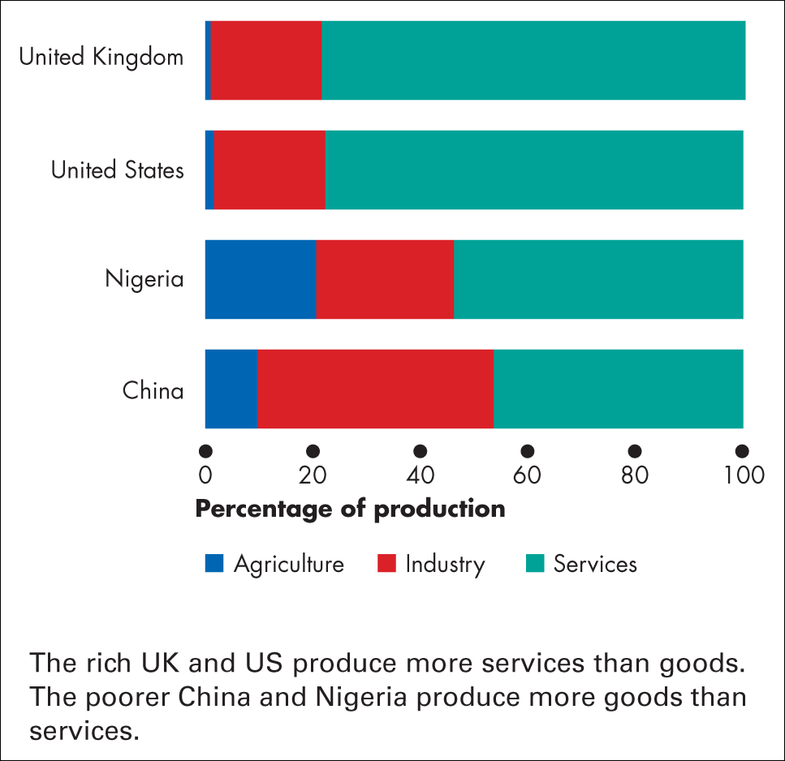
Globalisation — Nike making trainers in Malaysia, Toyota building cars in the United States — has gone on for centuries, but microchips, satellites, and fibre-optic cables recently slashed the cost of communication and globalised production decisions. It clearly serves the self-interest of the firms that profit. Whether it serves the social interest of workers at home and abroad is exactly the kind of question economics exists to test.
Daniel Kahneman won the Nobel Prize in Economics in 2002 for showing that humans systematically violate the assumption of perfect rationality. His prospect theory revealed that losses feel roughly twice as painful as equivalent gains feel pleasurable — a finding that reshaped behavioral economics and policy design worldwide.
The six ideas of the economic way of thinking
Beneath all the graphs, economists share one habit of mind. Six ideas define this economic way of thinking:
- A choice is a tradeoff — an exchange, giving up one thing to get something else. Because you face scarcity, whatever you choose, you could have chosen something else instead.
- Cost is what you must give up to get something.
- Benefit is what you gain from something — and it is measured by what you are willing to give up to get it.
- People make rational choices by comparing benefits and costs.
- Most choices are "how much" choices, made at the margin.
- Choices respond to incentives.
Opportunity cost
The single most important idea in that list is the proper meaning of cost. Opportunity cost is the best thing you must give up to get something — the highest-valued alternative forgone. The opportunity cost of an hour spent revising is not the £0 you paid for it; it is the shift at work, the gym session, or the sleep you sacrificed. Whenever an economist says "cost", they almost always mean opportunity cost.
Choosing at the margin
Real decisions are rarely all-or-nothing; they are "how much" decisions made by comparing all the relevant alternatives systematically and incrementally — at the margin. The two tools for this are:
- Marginal cost — the opportunity cost of a one-unit increase in an activity; what you must give up to get one additional unit.
- Marginal benefit — what you gain from one more unit, measured by what you are willing to give up to get it.
"Should I revise at all?" is the wrong question. "Should I revise for one more hour?" is the right one. If that extra hour lifts your expected mark more than the sleep it costs you, do it; once the gain from the next hour drops below its cost, stop. That is thinking at the margin.
Positive versus normative
Economists sometimes disagree. Some disagreements can be settled by appealing to further facts; others cannot, and the difference matters.
- A positive statement is about what is — it can, in principle, be settled by facts. "Raising the minimum wage reduces employment" is positive: collect data and test it.
- A normative statement is about what ought to be — it rests on values and cannot be settled by facts alone. "The minimum wage should be higher" is normative.
Economics as a social science uses the scientific method: an economist starts with a puzzle about cause and effect, builds an economic model (a description of the world stripped down to only the features needed to explain the facts), and then checks the model against reality using natural experiments, statistical investigations, and economic experiments.
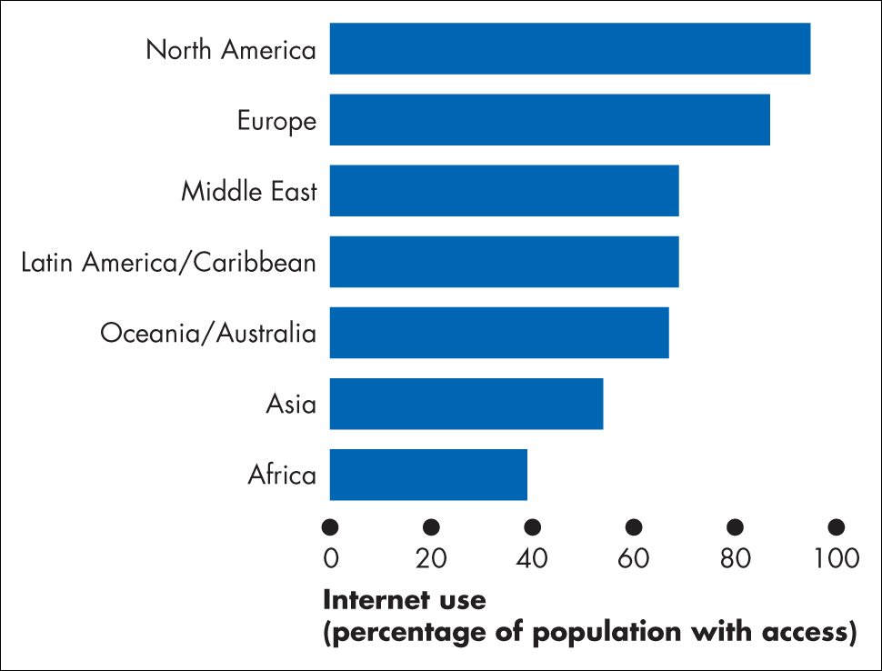
To recall the six ideas of the economic way of thinking, remember TCB-RMI — Tradeoff, Cost, Benefit, Rational choice, Margin, Incentives. Read it as "The Cost-Benefit Rule Means Incentives".
Is school always worth it? The benefits include the present enjoyment of student life and higher future income; the costs include tuition, books, and — crucially — the earnings you forgo while studying. For most people the net benefit is huge. But Bill Gates quit Harvard, Mick Jagger quit the London School of Economics, and Clayton Kershaw turned down a scholarship at Texas A&M. All three judged that, in their case, the benefit of staying was less than the opportunity cost of being there. Same calculation, different numbers.
The concept of opportunity cost was crystallised by Friedrich von Wieser in the 1880s, though the intuition is ancient. Austrian economists argued that cost is always subjective — it depends on the chooser's own valuation of the next-best alternative, not on any objective accounting.
The Economic Problem
Last week's abstract ideas — scarcity, choice, opportunity cost — get a single, powerful picture this week: the production possibilities frontier. From that one curve we can read off what is attainable, what counts as efficient, what every choice costs, how economies grow, and why two people who simply specialise and swap can both end up richer without anyone working harder.
The production possibilities frontier
The production possibilities frontier (PPF) is the boundary between the combinations of goods and services that can be produced and those that cannot, given the available factors of production and the state of technology. The textbook uses two goods — smartphones and bikes — but the lesson is general. The PPF makes scarcity visible and puts three distinctions in sharp focus.
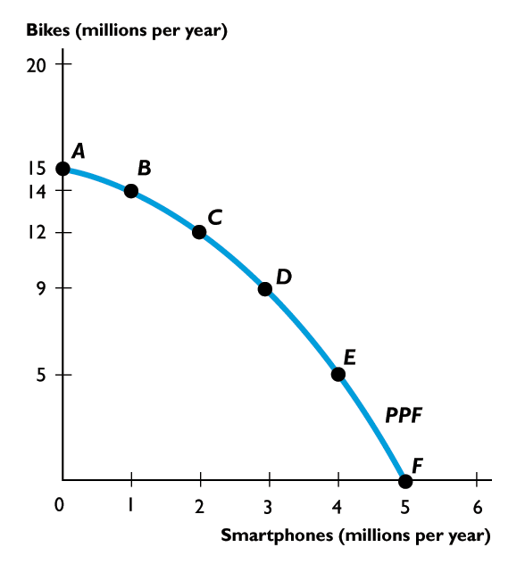
Attainable, efficient, and the tradeoff
- Attainable vs unattainable. We can produce at any point on or inside the PPF. A point outside it, such as point G, is unattainable. The frontier separates the possible from the impossible.
- Efficient vs inefficient. Production efficiency is a situation in which we cannot produce more of one good without producing less of something else. That happens only on the frontier. Inside the frontier (point H) production is inefficient — resources are idle or misused, so more of both goods could be had.
- Tradeoff vs free lunch. When we are on the PPF we face a tradeoff: more smartphones means fewer bikes. When we are inside it, moving towards the frontier is a free lunch — we get more of something without giving up anything, simply by ending the waste.
Opportunity cost on the PPF
On the frontier, opportunity cost is just the slope of the curve. The opportunity cost of producing one more smartphone is the quantity of bikes we must give up to get it.
Opportunity cost is a ratio, and it runs both ways: if the opportunity cost of a smartphone is x bikes, then the opportunity cost of a bike is 1/x smartphones. The two are reciprocals of each other.
Increasing opportunity cost
The PPF is bowed outward, not a straight line, and that shape carries the most important lesson of the chapter. As we produce more and more smartphones, the curve gets steeper, so each additional smartphone costs more bikes than the last. In the textbook figures the cost climbs from 1 bike, to 2, to 3, to 4, to 5 bikes per smartphone as production is pushed further. This is the principle of increasing opportunity cost, and it is everywhere: resources are not equally good at everything, so the more of one good you squeeze out, the less suitable the remaining resources are for the job.
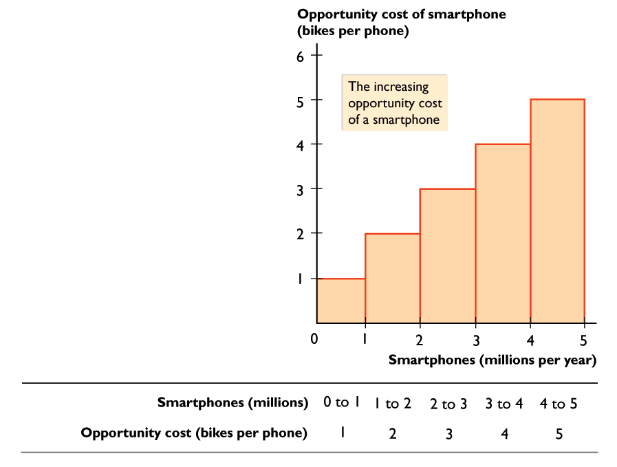
Drag the slider below to set how many units of Good A the economy makes, and watch the reckoner work out what's left over for Good B and the opportunity cost of that choice along a bowed-out frontier.
The PPF is the reason "free lunch" became economists' shorthand for something that doesn't exist. On the frontier there are no free lunches at all — every extra unit of one good is paid for in units of the other. The only free lunches in economics come from ending waste, by moving from inside the frontier onto it.
During the Second World War, the United States shifted its PPF dramatically toward military goods — tanks, ships, aircraft — while civilian car production nearly halted. The opportunity cost of victory was measured in forgone consumer goods, a tradeoff so stark that rationing coupons became a household necessity.
Economic growth
Economic growth is the sustained expansion of production possibilities — the whole PPF shifting outward over time. An economy grows when it develops better technology, improves the quality of its labour, or increases its quantity of capital. But growth itself has an opportunity cost. To study it, put consumption goods on one axis and a capital good (say, smartphone factories) on the other. Devote everything to consumption today and the frontier stays put; sacrifice some consumption now to build factories, and next year the PPF rotates outward, letting you produce at points that were impossible before. The cost of faster growth is less enjoyment today.
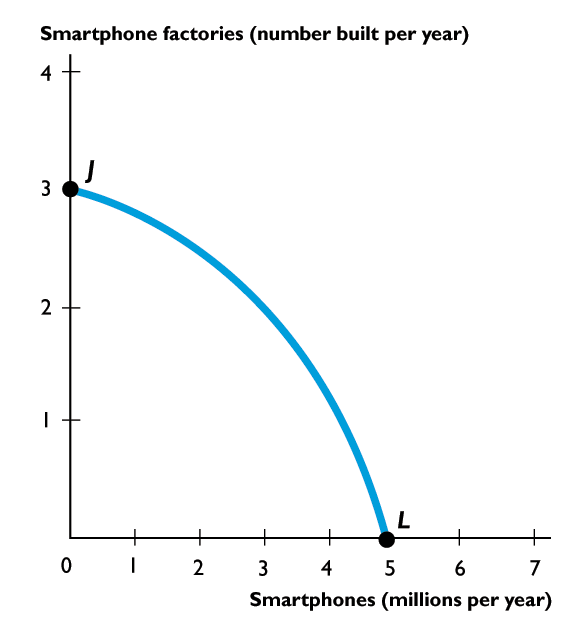
Specialisation and trade
The chapter's pay-off is that trade lets people consume outside their own PPF. Two ideas drive it, and they are easy to confuse.
- Absolute advantage — when one person (or nation) is simply more productive than another: needs fewer inputs, or takes less time, to produce a good.
- Comparative advantage — the ability to produce a good at a lower opportunity cost than someone else. This, not absolute advantage, is what determines who should specialise in what.
Liz and Joe: smoothies versus salads
Liz and Joe each run a smoothie bar making smoothies and salads.
- Liz can produce, in an hour, either 30 smoothies or 30 salads. Her opportunity cost of 1 smoothie is 1 salad (and vice versa). Splitting her time, she makes 15 smoothies and 15 salads.
- Joe can produce, in an hour, either 6 smoothies or 30 salads. His opportunity cost of 1 smoothie is 5 salads; of 1 salad, just 1/5 of a smoothie. On his own he makes about 5 smoothies and 5 salads.
Notice Liz has an absolute advantage in smoothies (30 vs 6) and ties in salads. Yet the gains come from comparative advantage. Liz's opportunity cost of a smoothie (1 salad) is below Joe's (5 salads), so Liz has the comparative advantage in smoothies. Joe's opportunity cost of a salad (1/5 smoothie) is below Liz's (1 smoothie), so Joe has the comparative advantage in salads.
Now they trade at 2 salads per smoothie. After specialising and swapping, Liz ends with 20 smoothies and 20 salads and Joe with 10 of each — both consuming at a point outside their own PPF. Each gains 5 smoothies and 5 salads an hour, out of thin air, purely from reorganising who does what. Notably, although Liz and Joe each have constant opportunity costs, the combined economy shows increasing opportunity cost: the first 30 smoothies cost just 1 salad each (Liz's), but the 31st must come from Joe at 5 salads.
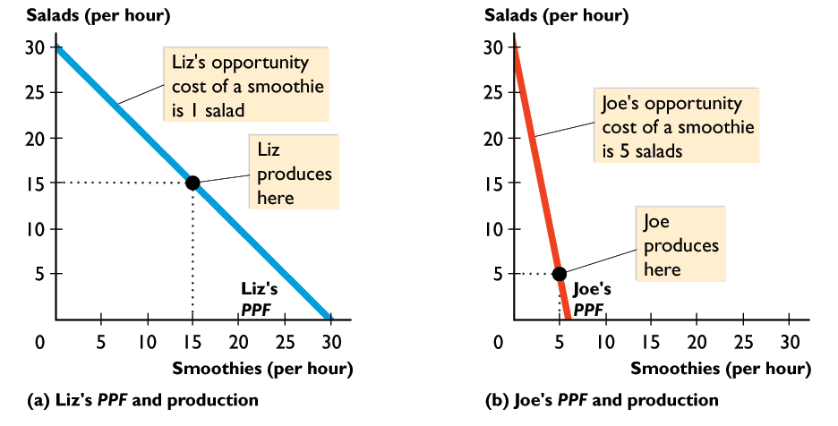
Use the four sliders to set how many smoothies (Good A) and salads (Good B) Liz and Joe can each make per hour. The reckoner compares their opportunity costs and tells you who should specialise in what.
Absolute advantage answers "who is better?"; comparative advantage answers "who is better placed?". Trade is governed by the second. Remember "Compare the Cost, not the Count" — you specialise by lowest opportunity cost, not by who can churn out the bigger number.
The principle that countries gain by specialising in their comparative-advantage goods was set out by David Ricardo in 1817 — over two centuries ago. His famous example had England and Portugal trading cloth and wine, but the logic is identical to Liz and Joe's smoothies and salads, and it still underpins the case for international trade today. It also explains demand and supply across borders.
Modern trade economists estimate that removing all remaining tariffs and quotas would raise global GDP by roughly $500 billion annually — a figure equivalent to adding another Switzerland to the world economy every year, all from the simple logic of comparative advantage that Ricardo identified two centuries ago.
How Markets Work
Demand, supply, prices — and what happens when government steps in.
Demand & Supply
Demand and supply each describe how the quantity people plan to trade depends on price, holding everything else constant. Get the difference between a movement along a curve and a shift of the whole curve clear now, and the rest of microeconomics falls into place.
The law of demand
Quantity demanded is the amount of a good that people are willing and able to buy during a specified period at a specified price — always an amount per unit of time, such as bottles per day. The law of demand states that, other things remaining the same, if the price of a good rises the quantity demanded decreases, and if the price falls the quantity demanded increases. Price and quantity demanded move in opposite directions, which is why the demand curve slopes downward.
Demand itself is the whole relationship between quantity demanded and price when all other influences remain unchanged. It is shown two ways: a demand schedule (a list of quantities demanded at each price) and a demand curve (the graph of that schedule). The market demand curve is the horizontal sum of every individual buyer’s demand curve.
Shifts versus movements — the crucial distinction
A change in the quantity demanded is caused only by a change in the price of the good itself; it is a movement along a fixed demand curve. A change in demand is caused by any influence other than the good’s own price; it produces a brand-new schedule and shifts the whole curve. When demand decreases the curve shifts leftward; when demand increases it shifts rightward. Confusing the two is the single most common error in market analysis.
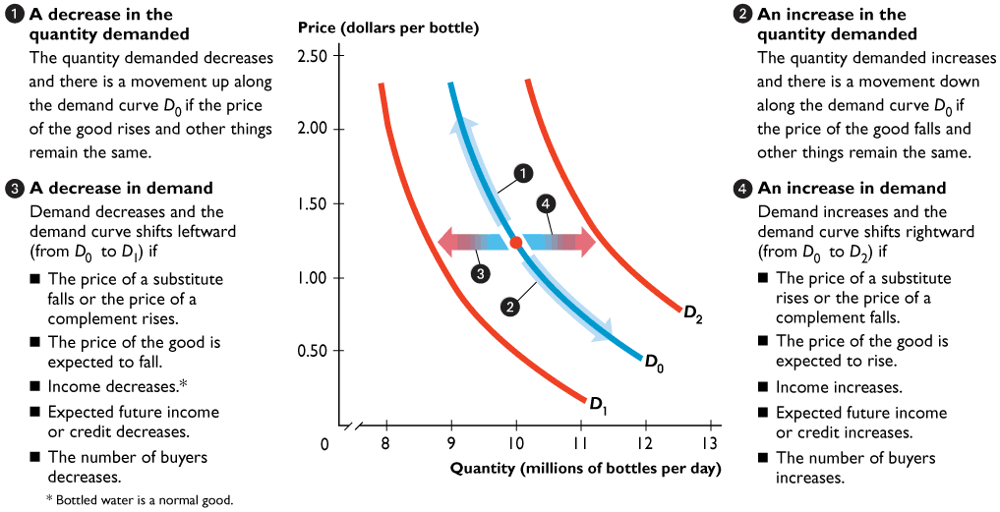
The determinants of demand
Six influences shift the demand curve. Prices of related goods: a substitute is consumed in place of the good (apples and oranges) — demand rises when a substitute’s price rises; a complement is consumed with the good (ice cream and fudge sauce) — demand rises when a complement’s price falls. Expected future prices: if a good’s price is expected to rise, current demand increases. Income: for a normal good demand rises with income; for an inferior good demand falls as income rises. Expected future income and credit matters most for big-ticket items such as homes and cars. Number of buyers and preferences complete the list.
Petrol and cars are complements. When pump prices spike, demand for fuel-hungry SUVs falls — even though the price of the SUV itself has not moved one penny. That is a shift in the demand curve for SUVs, triggered entirely by the price of something else.
Robert Giffen, a 19th-century statistician, identified a rare exception to the law of demand: for extremely inferior goods that absorb most of a poor household's budget (like potatoes during the Irish famine), a price rise can paradoxically increase quantity demanded because the income effect swamps the substitution effect. These Giffen goods are the holy grail of exceptions — theoretically fascinating, empirically elusive.
The law of supply
Quantity supplied is the amount sellers are willing and able to sell in a given period at a given price. The law of supply: other things remaining the same, a rise in price increases the quantity supplied and a fall decreases it — so the supply curve slopes upward. Supply is the whole relationship, shown by a supply schedule and a supply curve, with market supply the horizontal sum across all sellers. As with demand, a price change moves us along the curve (a change in quantity supplied), while any other influence shifts it (a change in supply).
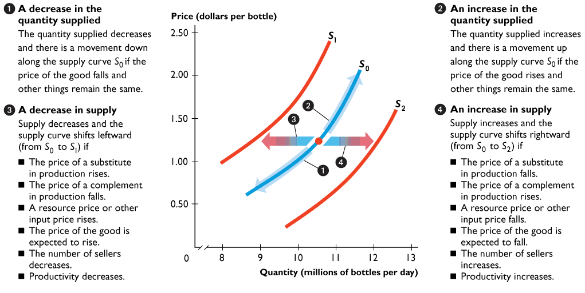
The determinants of supply
Five influences shift supply. Prices of related goods: a substitute in production (a truck versus an SUV on one assembly line) and a complement in production (cream alongside skim milk). Prices of resources and other inputs — higher input costs cut supply. Expected future prices. Number of sellers. And productivity — productivity is output per unit of input, so an advance in technology lowers cost and increases supply, while a severe hurricane or drought does the opposite.
Why the reckoner matters: market price is set where these two curves cross. Drag a curve and watch the equilibrium chase it. Demand and supply also reappear constantly later — they underpin consumer and producer surplus and every government intervention in Week 19.
Try it. Drag Demand shift and Supply shift to push each curve left (negative) or right (positive), and read off what happens to the equilibrium price and quantity.
To keep movements and shifts straight, remember: only the good’s own price moves you along the curve — everything else moves the curve. Own price = on the line; anything else = a new line.
Thorstein Veblen identified Veblen goods — luxury items like designer handbags or fine watches — where demand actually rises with price because the high price itself signals status. The demand curve slopes upward for a segment, violating the law of demand until income effects dominate at truly astronomical prices.
Equilibrium & Elasticity
Equilibrium tells you where price settles; elasticity tells you how sensitive the market is to being nudged. Together they let you predict, not just describe, what an event does to a market.
Market equilibrium, shortage and surplus
Market equilibrium occurs where quantity demanded equals quantity supplied — the intersection of the two curves. The equilibrium price is the price that makes the plans consistent, and the equilibrium quantity is the amount actually bought and sold. Away from equilibrium, the law of market forces takes over: a shortage (quantity demanded exceeds quantity supplied) drives the price up, while a surplus (quantity supplied exceeds quantity demanded) drives the price down. The price keeps adjusting until the gap closes.
How shifts change price and quantity
To predict the effect of any event, ask three questions: does it change demand or supply; does it increase or decrease that force (shift the curve right or left); and what are the new equilibrium price and quantity? The rules are tidy. An increase in demand raises both price and quantity; a decrease in demand lowers both — price and quantity move the same way as demand. An increase in supply lowers price but raises quantity; a decrease in supply raises price but lowers quantity — price moves opposite to supply, quantity moves the same way. When both curves shift at once, one of the two outcomes becomes ambiguous in direction.
In 2014 a fungus called coffee rust swept through Brazil and other South American producers. World coffee production fell and the price of beans rose from $1.04 to $1.35 a pound, while the quantity bought fell from 19.4 to 18.7 billion pounds. Because price rose and quantity fell, the cause must have been a decrease in supply, not an increase in demand — a textbook reading straight off the two curves.
Alfred Marshall, who formalised the supply-and-demand diagram in 1890, called the equilibrium price the "normal" price — not because it was morally right, but because it was the price the market tended toward like a pendulum seeking its rest point. He also coined the term elasticity in economics, borrowing it from physics.
The price elasticity of demand
Price elasticity of demand measures how much the quantity demanded responds to a change in price. To avoid the awkward fact that a price rise and the matching fall give different percentages, we use the midpoint method — dividing each change by the average of the old and new value — and we ignore the minus sign, working with absolute values.
Elastic versus inelastic
If elasticity is greater than 1 demand is elastic (quantity responds more than price); if it equals 1 demand is unit elastic; if it is less than 1 demand is inelastic (quantity barely responds). At the extremes, perfectly elastic demand is a horizontal line and perfectly inelastic demand is vertical. Demand is more elastic when close substitutes are easy to find, when the good is a luxury rather than a necessity, when it is narrowly defined, when more time has passed since the price change, and when it absorbs a larger share of income. Note too that along a straight-line demand curve, elasticity is not constant: demand is elastic above the midpoint, unit elastic at it, and inelastic below it.
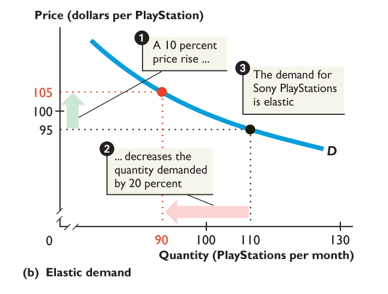
Elasticity and total revenue
Total revenue is price multiplied by quantity sold. The total revenue test reads elasticity straight off what happens to revenue when price changes. If demand is elastic, a price rise cuts quantity by proportionally more, so total revenue falls — price and revenue move in opposite directions. If demand is inelastic, a price rise loses little quantity, so total revenue rises — price and revenue move together. If revenue is unchanged, demand is unit elastic. This is exactly why a frost that cuts the orange harvest (demand elasticity around 0.4, deeply inelastic) actually raises farmers’ revenue.
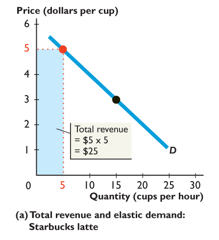
Try it. Drag Price up and down and watch the quantity demanded, the elasticity, and total revenue respond — notice where revenue peaks (the unit-elastic midpoint).
Cross and income elasticities
Two further elasticities round out the toolkit. Cross elasticity of demand measures how the demand for one good responds to the price of another good. It is positive for substitutes (a cheaper burger reduces pizza demand — same direction) and negative for complements (cheaper soda raises pizza demand — opposite direction).
Income elasticity of demand measures how demand responds to a change in income; it is positive for normal goods and negative for inferior goods, linking back to the demand determinants from demand and supply.
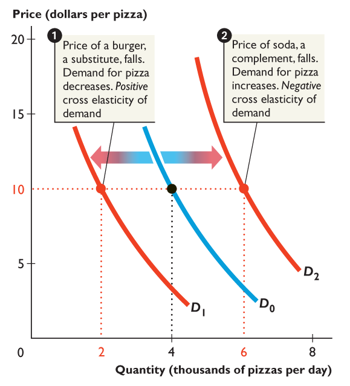
The revenue test in one breath: with elastic demand, price and revenue pull apart; with inelastic demand, they move together. Elastic: opposite. Inelastic: in step.
Pharmaceutical companies price life-saving drugs with near-zero elasticity: when the alternative is death, demand is almost perfectly inelastic. This is why insulin prices in the United States can rise 300% in a decade without demand collapsing — and why the debate over drug pricing is fundamentally a debate about whether essential medicines should be treated like ordinary market goods.
Efficiency & Equity
Efficiency asks whether the pie is as large as it can be; equity asks how the pie is shared. Markets are remarkably good at the first and silent on the second.
Methods of allocating scarce resources
Markets are only one way to allocate scarcity. Resources can also be assigned by command, majority rule, contest, first-come first-served, sharing equally, lottery, personal characteristics, or force. Each works well in its niche — command inside a firm, lottery when users cannot be distinguished, first-come first-served at a checkout — but for most goods and services market price does the job best, sending each resource to whoever values it most.
Value versus price — consumer surplus
Buyers distinguish value (what they get) from price (what they pay). The value of one more unit is its marginal benefit, which equals the maximum price a person is willing to pay for it — so the demand curve is a marginal-benefit curve. Because marginal benefit falls as quantity rises, buyers usually pay less than the most they would have paid. Consumer surplus is marginal benefit minus price, summed over every unit bought — the green triangle below the demand curve and above the market price.
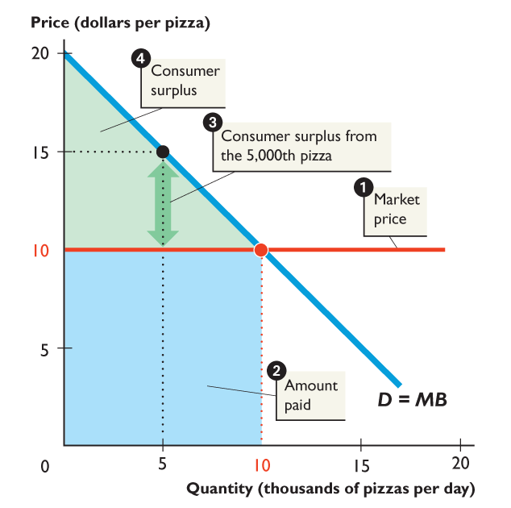
Cost versus price — producer surplus
Sellers make the mirror-image distinction between cost (what they give up to produce) and price (what they receive). The cost of one more unit is its marginal cost, and because the supply curve traces the minimum price needed to tempt out each unit, the supply curve is a marginal-cost curve. Producer surplus is price minus marginal cost, summed over every unit sold — the blue triangle above the supply curve and below the price.
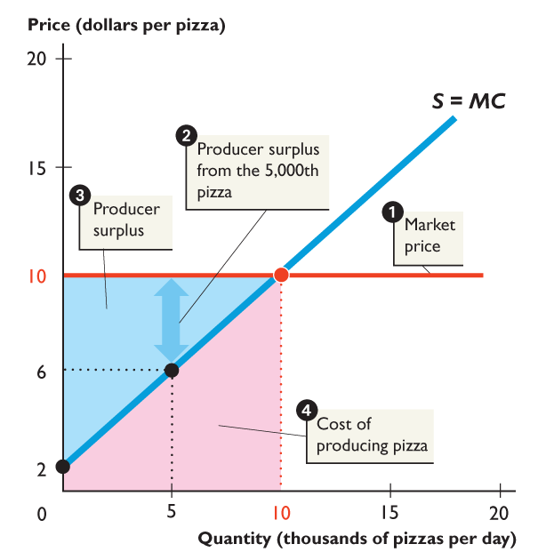
Why competitive markets are efficient
Allocative efficiency is reached when the quantity produced is the one people value most highly — where marginal benefit equals marginal cost. In a competitive market the demand curve shows marginal benefit and the supply curve shows marginal cost, so at equilibrium MB = MC automatically and the allocation is efficient. The total surplus — consumer plus producer surplus — is then at its maximum. As Adam Smith put it in The Wealth of Nations (1776), each self-interested participant is “led by an invisible hand” to an outcome that serves the social interest, even though it was no part of anyone’s intention.
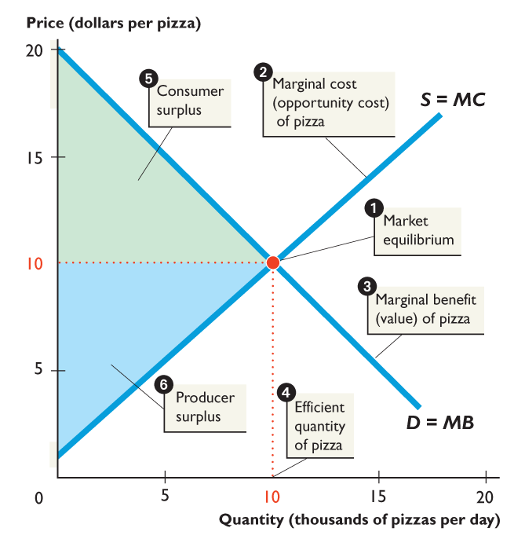
Deadweight loss and market failure
Market failure arises when output departs from the efficient quantity — too little (underproduction) or too much (overproduction). Either way a deadweight loss appears: the fall in total surplus caused by trading the wrong quantity. It is borne by society as a whole, not just buyers or sellers. The usual culprits are price and quantity regulations, taxes and subsidies, externalities, public goods and common resources, monopoly, and high transactions costs — most of which return in government actions in markets and in the study of monopoly.
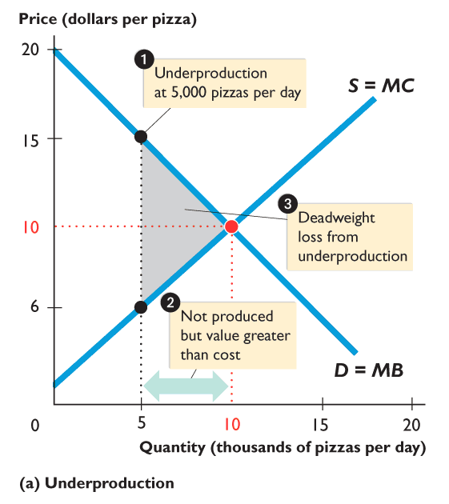
Deadweight loss is genuinely lost, not merely transferred. A tax moves money from one pocket to another, but the deadweight-loss triangle represents trades that simply never happen — value that evaporates rather than changing hands.
The Coase theorem, named after Ronald Coase, states that if property rights are well-defined and transaction costs are low, private bargaining will solve externality problems and reach an efficient outcome regardless of who initially holds the rights. It is a powerful theoretical benchmark, though in practice transaction costs often block the bargain.
Try it. Drag the Demand intercept (the highest price any buyer will pay) and the Supply intercept (the lowest price any seller will accept) and watch the two surplus triangles — and total surplus — grow and shrink.
Efficiency is not the same as fairness
An efficient market can still leave a distribution most people would call unjust. Two broad views of fairness compete. The fair-rules view — “it’s not fair if the rules aren’t fair” — means equality of opportunity; Robert Nozick argued the state need only protect private property and enforce voluntary exchange. The fair-results view — “it’s not fair if the result isn’t fair” — judges the distribution itself and leads to the big tradeoff: redistributing income through taxes shrinks the economic pie even as it shares it more equally. There is no tidy answer, only the tension between the size of the pie and the evenness of its slices.
John Rawls' "veil of ignorance" thought experiment asks us to design society without knowing which position we will occupy. His conclusion — the difference principle — holds that inequalities are only just if they benefit the least-advantaged members of society. It remains one of the most influential philosophical frameworks for judging market outcomes.
Government Actions in Markets
Every intervention in this section is the same supply-and-demand diagram with one price held away from equilibrium. Find the new quantity traded — always the shorter side of the market — and the consequences follow.
Price ceilings and shortages
A price ceiling (or price cap) sets a legal upper limit on price; trading above it is illegal. A rent ceiling is the classic case. Set above the equilibrium rent it does nothing. Set below it — say a $400 cap when equilibrium rent is $550 — the quantity of housing supplied falls and the quantity demanded rises, opening a shortage. The shortage then spills into a black market (illegal trading alongside the regulated one) and wasteful search activity — time burned hunting for a flat. Because marginal benefit now exceeds marginal cost, total surplus shrinks and a deadweight loss arises.
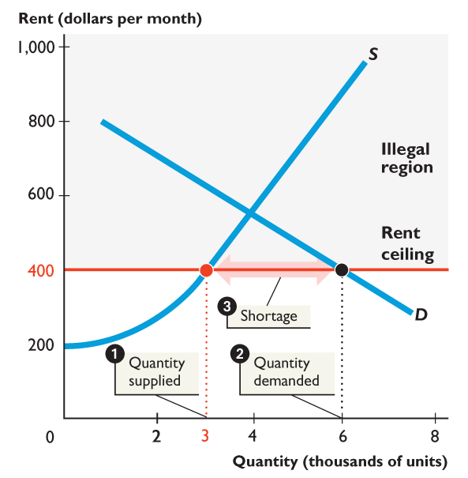
Price floors and surpluses
A price floor sets a legal lower limit on price; trading below it is illegal. The minimum wage is a price floor in the labour market. Set above the equilibrium wage, the quantity of labour demanded falls while the quantity supplied rises — and the gap is unemployment. With a $7 minimum where equilibrium is $5, firms cut hiring to 3,000 while 7,000 people want to work, leaving 4,000 unemployed. The scarce jobs are then rationed by increased search activity and illegal hiring, and once again a deadweight loss appears alongside the lost surplus.
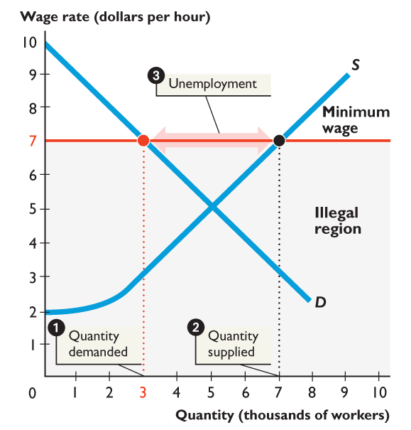
Taxes and tax incidence
A tax drives a wedge between the price buyers pay and the price sellers keep, lowering the quantity traded and creating a deadweight loss. Crucially, tax incidence — who actually bears the burden — does not depend on whom the law taxes, but on relative elasticities. The more inelastic side of the market pays the larger share, because it has the least room to escape. When demand is perfectly inelastic, buyers bear the whole tax; when it is perfectly elastic, sellers bear it all. The same logic runs through the elasticity of supply.
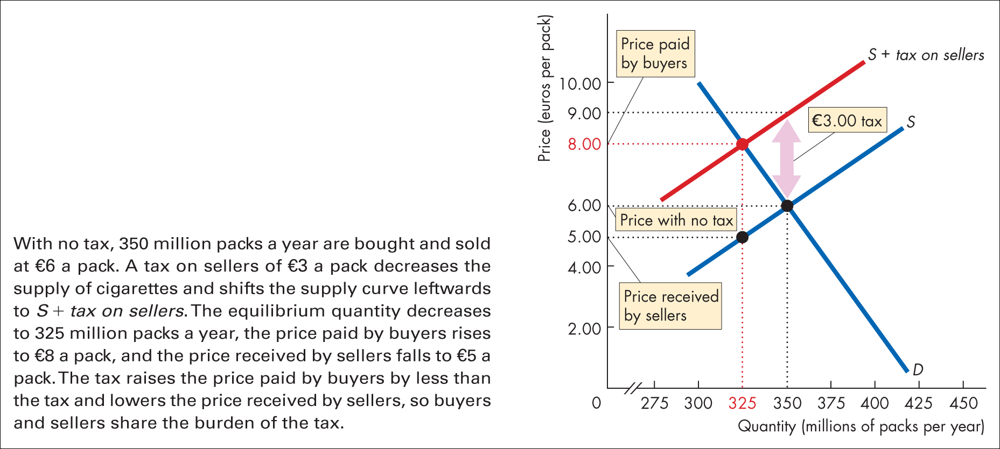
It makes no economic difference whether a sales tax is legally collected from the shop or from the shopper. Identical price wedge, identical incidence — the statutory target is pure theatre. Elasticities, not legislators, decide who really pays.
A 2021 meta-analysis of minimum-wage studies found that modest increases (up to roughly 60% of the median wage) have negligible or even slightly positive employment effects, while large jumps cause clear job losses. The elasticity of labour demand matters enormously: fast-food restaurants can automate; small rural shops cannot.
Subsidies, quotas and price supports
A subsidy is a government payment to producers; it lowers the price buyers pay, raises the price sellers receive, and pushes output above the efficient quantity — overproduction with its own deadweight loss. A quota caps the quantity a producer may make, forcing underproduction. In farming the two combine as a price support: a price floor the government maintains by buying up whatever surplus results. With sugar beets, a $35 support above the $25 equilibrium lifts output to 30 million tons, of which only 20 million are bought domestically; the government purchases the 10-million-ton surplus — a $350 million subsidy — and a deadweight loss arises because buyers lose more than farmers gain.
These interventions also reach beyond efficiency into the policy debates met later under fiscal policy and, for the labour-market floor, the broader study of factor markets.
Asked whether a president could repeal the laws of demand and supply, economists point to the federal minimum wage, which leaves some teenagers jobless despite the best intentions. Cap executive pay the same way and the result mirrors a rent ceiling: the supply of executive talent shrinks, the most able leave for unregulated employers, and the deadweight loss is large. A mismatch between intention and outcome is almost inevitable whenever a law tries to block supply and demand.
Whenever you see a persistent queue, a waiting list, or a thriving resale market, look for a price held below equilibrium; whenever you see an unwanted glut a government keeps buying up, look for a price propped above it. The shortage or surplus is the price control made visible.
Sweden abolished rent control on new properties in the 1970s and saw construction surge, while cities like New York and Stockholm that kept strict caps suffer chronic shortages. The empirical evidence is remarkably consistent: rent ceilings reduce the quantity and quality of housing available, even when they succeed at holding down the stated price.
Firms & Competition
How firms produce, price, and compete — from perfect competition to monopoly.
Consumer Choice & Demand
A consumer cannot have everything. Their budget and the prices of goods set hard limits, and the art of choosing well is choosing the mix that squeezes the most benefit out of those limits. This section builds the demand curve from the household up.
The budget line: what you can afford
A budget line describes the limits to a consumer's choices, given their budget and the prices of goods. Imagine Tina has £4 a day to spend on bottled water (£1 a bottle) and gum (50p a pack). Every combination she can just afford lies on a straight line; combinations below it are affordable but waste money, and combinations above it are simply out of reach. The budget line is the frontier between the affordable and the unaffordable.
When the budget changes, the line shifts without tilting: a bigger budget pushes it rightward, a smaller budget pulls it leftward, and the slope stays the same because relative prices have not changed.
Slope = relative price = opportunity cost
The slope of the budget line is the relative price — the price of one good expressed in units of the other. With water at £1 and gum at 50p, the slope is 2 packs of gum per bottle of water: to get one more bottle, Tina must give up two packs. That trade-off is the opportunity cost of water. When the price of one good changes, the line rotates and the slope changes: a fall in the price of water makes the line flatter (water is "cheaper" in gum terms); a rise makes it steeper.
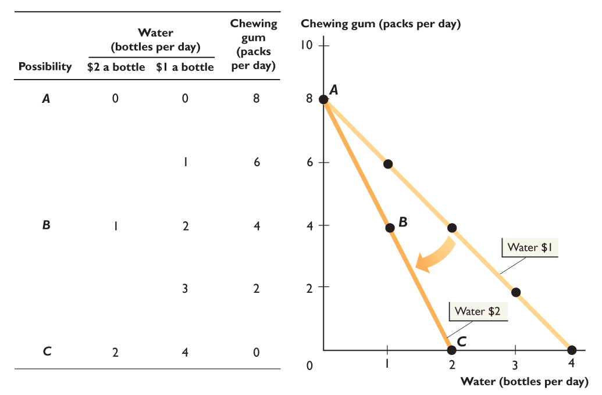
Marginal utility theory
Utility is the benefit or satisfaction a person gets from consuming a good. Total utility generally rises as you consume more, but marginal utility — the extra utility from one more unit — tends to fall. This is the principle of diminishing marginal utility: the first glass of water on a hot day is bliss; the fifth is barely noticed.
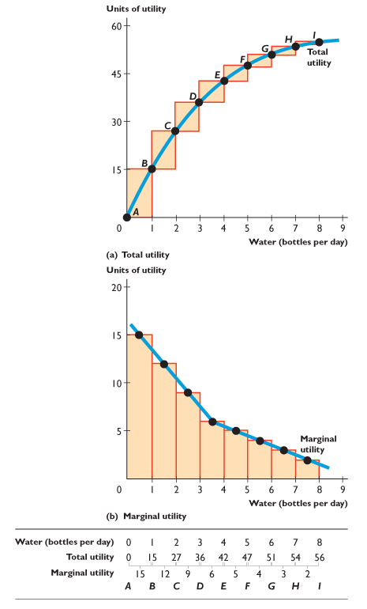
The utility-maximising rule
A consumer maximises total utility by following one rule: spend the entire budget and make the marginal utility per pound equal across all goods. Marginal utility per pound is a good's marginal utility divided by its price — satisfaction bought per pound spent.
If the marginal utility per pound from gum exceeds that from water, the consumer is not yet maximising: buying more gum and less water raises gum's price-adjusted satisfaction toward water's until the two meet. At that balance, no reshuffling of the budget can raise total utility.
Deriving the demand curve
Now drop the price of water and re-apply the rule. A lower price raises water's marginal utility per pound, so the household buys more water. Each price gives a new utility-maximising quantity — and plotting price against quantity traces out the individual demand curve. The downward slope is no accident: it falls straight out of diminishing marginal utility.
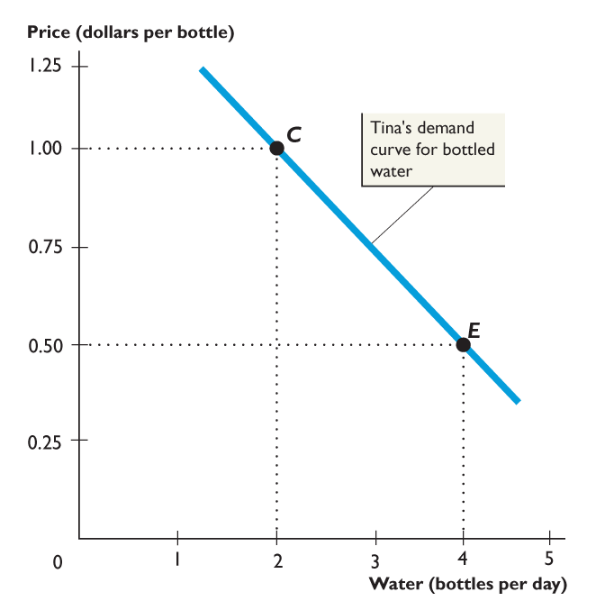
Richard Thaler's "nudge" theory showed that simply changing the default option — for example, making pension enrollment automatic rather than opt-in — can raise participation from 50% to 90%. The budget constraint is unchanged, but the framing of choice alters behavior without restricting freedom.
Production & Cost
To understand how firms behave, start with what production costs them. The accountant and the economist measure cost differently, and that difference decides whether a "profitable" firm is really creating value at all.
Economic vs accounting cost and profit
The firm's goal is to maximise profit — but which profit? An explicit cost is paid in money (wages, rent, materials). An implicit cost is an opportunity cost with no money changing hands — chiefly economic depreciation of owned capital and the value of the owner's own resources and time. Crucially, that includes normal profit: the return the entrepreneur could earn running their next-best venture.
Accountant
Economist
Because the economist subtracts more, economic profit is always less than accounting profit. A firm earning zero economic profit is still doing fine — it is covering normal profit, exactly matching its best alternative.
Short run vs long run
The short run is a time frame in which at least one resource — usually capital, the plant — is fixed; the firm varies output by varying labour. The long run is long enough to change every input, including plant size. A sunk cost — already spent and unrecoverable — is irrelevant to any forward-looking decision.
Product curves & diminishing returns
Three concepts link labour to output. Total product (TP) is total output per period. Marginal product (MP) is the extra output from one more worker. Average product (AP), also called productivity, is total product per worker.
Production typically shows increasing marginal returns at first (specialisation and division of labour), then the law of decreasing returns bites: with fixed plant, each extra worker eventually adds less than the last, because more hands share the same equipment and space. This single fact shapes the cost curves that follow.
The cost curves
Total cost splits into two parts. Total fixed cost (TFC) does not change with output — the cost of the fixed factors. Total variable cost (TVC) rises with output — chiefly labour.
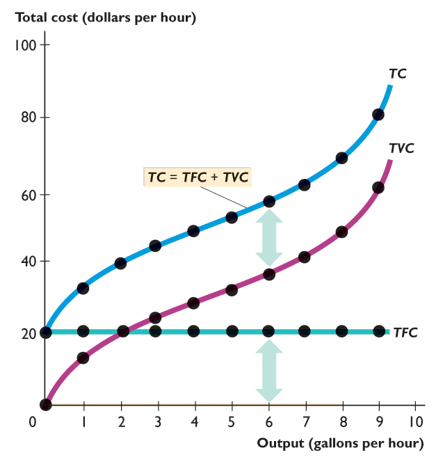
Dividing each total by output Q gives the per-unit, or average, costs — plus marginal cost (MC), the change in total cost from one more unit of output.
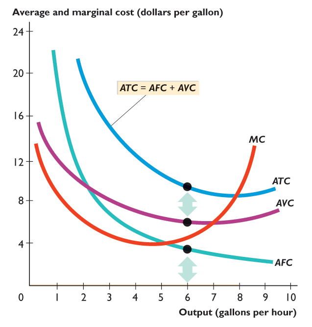
Why the curves are U-shaped
The U-shape of ATC comes from two opposing forces. At low output, spreading fixed cost over more units pulls average cost down sharply. At high output, decreasing marginal returns push average cost up. The cost curves mirror the product curves: when MP is at its maximum, MC is at its minimum; when AP peaks, AVC bottoms out. MC always intersects AVC and ATC at their minimum points — whenever the next unit costs less than the average, it drags the average down, and vice versa.
Economies of scale in the long run
In the long run plant size is variable, so the firm picks the cheapest plant for each output. Economies of scale exist when scaling up all inputs by some percentage raises output by a larger percentage, so average total cost falls (chiefly from greater specialisation). Diseconomies of scale are the reverse, arising from the difficulty of coordinating a large enterprise. Between them lie constant returns to scale. The long-run average cost curve (LRAC) is the lower envelope tracing the lowest attainable ATC at every output.
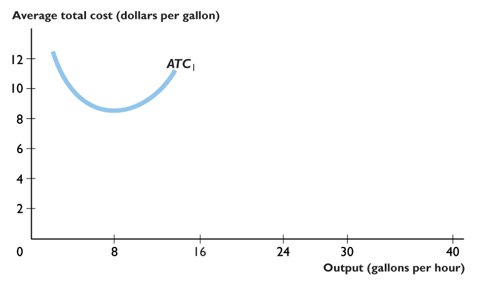
Now drag the two sliders below to see how spreading a fixed cost over more units reshapes average and marginal cost in the short run.
The "learning curve" — distinct from economies of scale — states that average cost falls simply because workers and managers get better at what they do through repetition. In aircraft manufacturing, each doubling of cumulative production reduces unit cost by roughly 20%. This is why the first jet off a line costs far more than the hundredth.
Perfect Competition
Perfect competition exists when many firms sell an identical product to many well-informed buyers, with no restrictions on entry or exit and no advantage for established firms. It is the benchmark against which every other market is judged.
Price takers and marginal revenue
A price taker cannot influence the market price — its output is a drop in the ocean. The firm can sell as much as it likes at the going price, so each extra unit adds exactly the price to revenue. That makes marginal revenue (the change in total revenue from selling one more unit) equal to price.
Profit-maximising output: MR = MC
Compare marginal revenue with marginal cost. If MR > MC, the next unit adds more to revenue than to cost, so producing it raises profit. If MR < MC, the last unit cost more than it earned, so cut back. Profit is maximised where the two are equal.
Shutdown and break-even points
Losses do not always mean stopping. If the firm shuts down it still loses its total fixed cost. If price at least covers average variable cost, producing covers all variable cost plus something towards fixed cost, so the loss is smaller than shutting down. The shutdown point is where price equals minimum AVC; below it, output is zero. The break-even point is where price equals minimum ATC — the firm makes exactly zero economic profit.
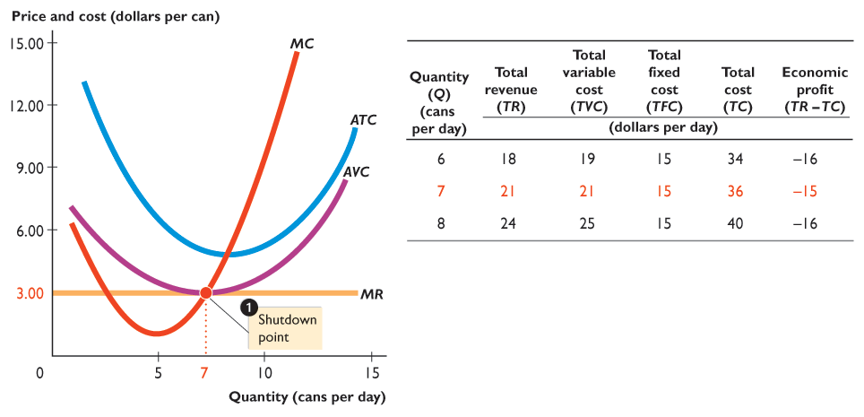
The firm's short-run supply curve
Trace the profit-maximising output as the price rises and you get the firm's short-run supply curve. At prices below minimum AVC the firm shuts down (output zero); at higher prices it produces along its MC curve. So the competitive firm's supply curve is its marginal cost curve above the shutdown point.
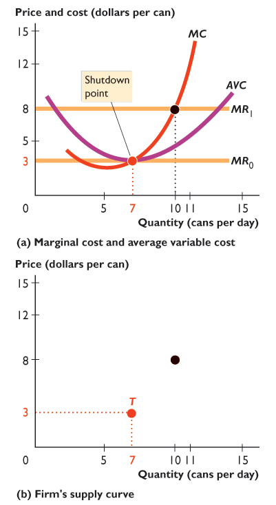
The long run: zero economic profit
In the short run a firm can earn positive economic profit (price above ATC) or suffer a loss (price below ATC). But neither lasts. Profit attracts entry: new firms join, market supply rises, and price falls until profit vanishes. Losses trigger exit: firms leave, supply falls, and price rises until the survivors break even. In long-run equilibrium price is pulled to minimum ATC and every firm makes exactly zero economic profit — covering normal profit, no more.
Why perfect competition is efficient
The market supply curve is the sum of firms' marginal cost curves, so it is the economy's marginal cost curve. The market demand curve is the marginal benefit curve. Where they cross, price equals both marginal benefit and marginal cost — the efficient quantity is produced and total surplus (consumer plus producer surplus) is maximised.
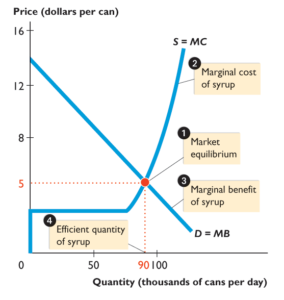
Agricultural markets are the closest real-world approximation to perfect competition. Wheat farmers are classic price takers: no single grower can influence the world price, products are effectively identical, and entry is relatively free. This is why farm policy — price supports, subsidies, quotas — has been a battleground for over a century.
Monopoly
A monopoly is a market with a single supplier of a good that has no close substitutes, protected by a barrier to entry. Compared with perfect competition, it tells the opposite story about output, price, and efficiency.
How monopoly arises
Two things must hold: no close substitutes, and barriers to entry. Barriers come in two kinds. A natural monopoly arises when economies of scale are so deep that one firm can serve the whole market more cheaply than several could — think electricity distribution. A legal monopoly is created by law: a public franchise, government licence, patent, or copyright that blocks entry.
Marginal revenue is below price
Because the monopolist is the only seller, the firm's demand curve is the market demand curve, which slopes downward. To sell one more unit it must cut the price — not just on the extra unit but on all units. So the gain on the new sale is partly offset by revenue lost on units it was already selling, and marginal revenue falls below price.
Output and price decision: MR = MC
The profit-maximising rule is unchanged — produce where MR = MC — but the consequence differs. The monopolist finds the quantity where MR meets MC, then reads the price off the demand curve above that quantity. Because demand sits above MR, that price exceeds marginal cost, and the gap between price and ATC times the quantity is economic profit.
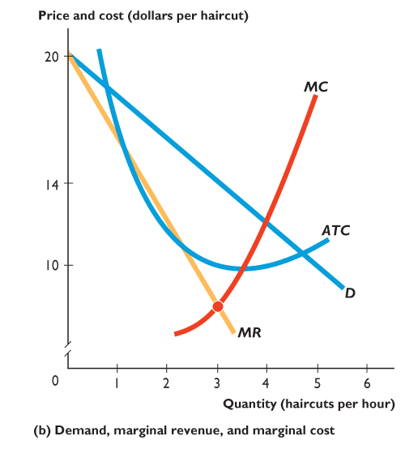
Monopoly vs competition: output and price
Hand a competitive industry to a single owner and the outcome shifts. Where competition produces QC at price PC (with supply = industry MC), the monopoly produces the smaller QM where MR = MC and charges the higher PM. A single-price monopoly restricts output and raises price.
Perfect competition
Single-price monopoly
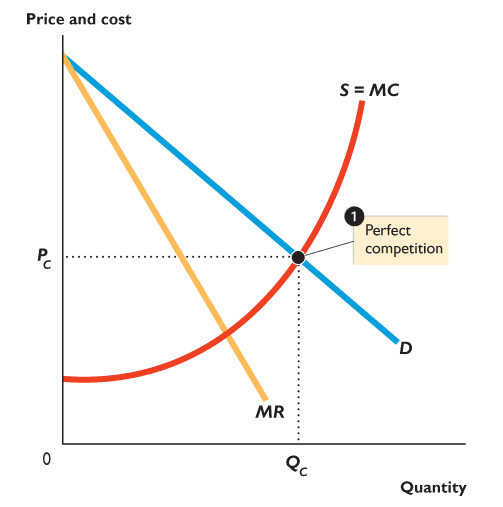
Deadweight loss and inefficiency
At the monopoly quantity, price (which equals marginal benefit) exceeds marginal cost: society values another unit more than it costs to make, but the monopolist will not supply it. This underproduction creates a deadweight loss — surplus that simply vanishes. Consumer surplus shrinks; part of it is transferred to the producer and part is destroyed.
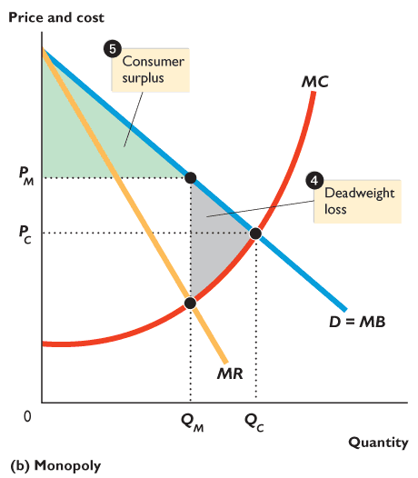
Price discrimination, rent seeking & regulation
Price discrimination — charging different prices to different buyers or for different units — converts consumer surplus into profit. It needs the firm to separate buyer types and prevent resale (airline fares are the classic case). With perfect price discrimination the demand curve becomes the marginal revenue curve: output rises to the efficient level and deadweight loss disappears, but the entire surplus is captured by the producer.
Rent seeking is the costly pursuit of monopoly privileges through lobbying. Competition among rent seekers can exhaust the whole economic profit, leaving only normal profit while adding to the deadweight loss. Because natural monopolies are inefficient, governments use regulation: a marginal cost pricing rule achieves efficiency but leaves the firm with a loss, so regulators fall back on average cost pricing or a price cap as second-best fixes.
Drag the choke price and marginal cost below to watch how a monopoly's output and price diverge from the competitive benchmark — and how the deadweight loss opens up between them.
Standard Oil controlled roughly 90% of U.S. petroleum refining in the 1880s before the Supreme Court broke it up in 1911 under the Sherman Antitrust Act. The breakup created 34 independent companies, several of which (Exxon, Mobil, Chevron) became among the largest corporations in history — suggesting that monopoly power was masking even greater competitive potential.
Oligopoly & Game Theory
Oligopoly sits between perfect competition and monopoly: a small number of firms, protected by natural or legal barriers to entry, each large enough to matter to the others.
Few firms, deep interdependence
The defining feature is interdependence: with so few players, the profit each earns depends on its own actions and on its rivals' reactions. Before cutting a price or expanding output, a firm must ask how the others will respond. A natural oligopoly (such as a duopoly) arises when market demand and economies of scale together leave room for only a few firms to earn a profit.
The temptation to collude — and to cheat
Because they share the market, the firms could raise their combined profit by forming a cartel — agreeing to limit output and lift price, behaving as one monopoly. But cartels are illegal in most countries, and even where they are not, they are unstable. With price above marginal cost, each member can boost its own profit by quietly producing more. If everyone does, output expands all the way to the competitive level and the monopoly profit evaporates.
The prisoners' dilemma
Game theory studies strategic behaviour — choices that account for the expected behaviour of others. Every game has rules, strategies, and payoffs. The classic is the prisoners' dilemma: two suspects, questioned separately, each choose to confess or deny. A payoff matrix lays out the consequences of every combination.
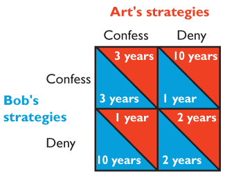
The outcome is a Nash equilibrium: each player takes the best action given what the other does. Here that means both confess — even though mutual silence would have been better for both. No one can improve by deviating alone, so the bad outcome sticks.
The duopolists' dilemma
Boeing and Airbus face the same trap. Each can produce the low (collusive) output or the high (cheating) output. Set out their economic profits and the structure is identical to the prisoners' dilemma: whatever the rival does, each firm earns more by raising output, so both expand and both earn less than the monopoly profit they could have split.
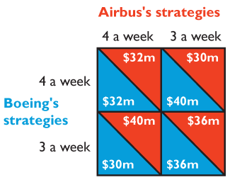
Repeated games & tit-for-tat
Real rivalry is played over and over. In repeated games a firm can punish a cheat in later rounds, which opens the door to cooperation. Under a tit-for-tat strategy a firm cooperates until the rival cheats, then retaliates in the next period. The threat of punishment can sustain the monopoly outcome — but the more players there are, and the harder cheating is to detect, the quicker cooperation breaks down. The same logic explains why advertising and R&D battles (Coke vs Pepsi, P&G vs Kimberly-Clark) settle into a "both spend" equilibrium even though both would profit more if neither did.
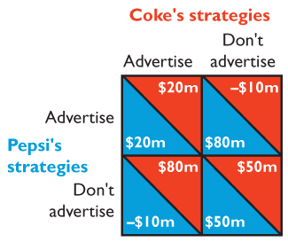
Antitrust and competition law
Because oligopoly, like monopoly, keeps price above marginal cost and output below the efficient level, governments use antitrust law (competition law) to curb market power. Price fixing is always illegal. More debatable practices — resale price maintenance, predatory pricing, and tying arrangements — can be either harmful or efficient depending on the facts. Concentration measures such as the Herfindahl–Hirschman Index help regulators decide which mergers to scrutinise.
John Nash, the mathematician who formalised the Nash equilibrium, struggled with schizophrenia for decades before winning the Nobel Prize in Economics in 1994. His equilibrium concept is now used in everything from auction design to nuclear-arms negotiations — a testament to the power of a single elegant idea.
Factor Markets: Labour, Capital & Land
Factor markets trade the services of the factors of production — labour, capital, land, and entrepreneurship. Their prices (wages, rental rates, rents) are determined by the same forces of supply and demand as any other market, with a few important twists.
Derived demand and the value of marginal product
The demand for a factor is a derived demand: a firm wants workers not for their own sake but for the output they produce, so demand for labour is derived from demand for the firm's product. The key tool is the value of marginal product (VMP) — the extra revenue a firm earns from hiring one more unit of a factor.
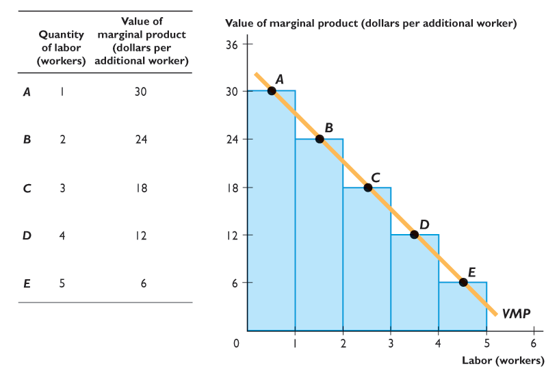
VMP is the firm's demand for labour
A firm hires labour up to the point where the value of marginal product equals the wage rate. If VMP exceeds the wage, the next worker adds more revenue than they cost — hire them. If the wage exceeds VMP, the last worker is a loss — let them go. So the firm's demand for labour curve is simply its VMP curve, and it slopes downward because VMP diminishes.
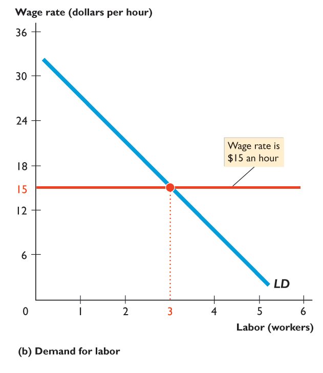
Wage and employment determination
The market supply of labour comes from households who weigh work against leisure; an individual's supply curve can even bend backward at very high wages. Adding up all households gives the upward-sloping market supply curve. Where market demand (the summed VMP curves) meets market supply, the equilibrium wage rate and the level of employment are determined.
Labour unions
A labour union is an organised group of workers seeking higher wages and better conditions. By restricting the supply of labour, a union can shift the supply curve leftward, raising the wage but lowering employment — jobs are traded for pay. Alternatively, if a union can raise members' productivity (and so their VMP), it shifts the demand curve rightward, lifting both the wage and employment. Evidence puts the union–non-union wage gap, after allowing for skill, at roughly 10–25 per cent.
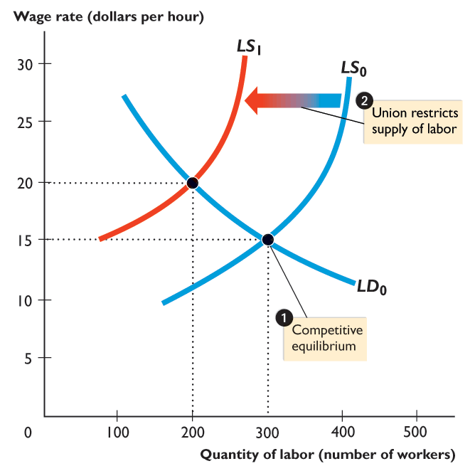
Capital, land & rental rates
The same VMP logic governs the other factors. A firm rents capital services up to the point where the value of marginal product of capital equals the rental rate of capital; demand and supply set the equilibrium rental rate (for example, the daily rate for tower cranes). Land is special: its quantity is fixed, so its supply curve is perfectly inelastic (vertical). Demand alone — driven by the value of marginal product of land — determines the rent on a given parcel.
Economic rent vs opportunity cost
Any factor income can be split in two. Economic rent is the part above what is needed to keep the factor in its present use; the rest is opportunity cost — the minimum payment required to attract it. For a perfectly inelastic factor such as a fixed block of land, the supply is there no matter what, so almost the entire payment is economic rent. For nonrenewable resources, the Hotelling Principle holds that the price is expected to rise over time at a rate equal to the interest rate.
The CEO-to-worker pay ratio in the United States was roughly 20-to-1 in 1965 and exceeded 300-to-1 by 2020. While some of this reflects genuine VMP from global scale and technology, economists debate how much reflects rent extraction — pay above the level needed to attract talent — enabled by weak shareholder governance and social norms.
Macroeconomics & Policy
Zooming out: the whole economy — output, jobs, money, and the levers governments pull.
Measuring GDP & Economic Growth
This section builds GDP from its definition, shows the two ways to measure it (spending and income), strips out inflation to get real GDP, and then asks the awkward question: how much does GDP actually tell us about how well people live?
What GDP is — and the four words that define it
GDP is the market value of all final goods and services produced within a country in a given time period. Each phrase matters. Market value lets us add apples to haircuts to software by valuing everything at its price, in pounds. Final goods are bought by their end user; we deliberately exclude intermediate goods (the flour a baker buys) to avoid counting the same value twice. Within a country means domestic production, wherever the owner lives. And given time period is normally a quarter or a year.
The word "gross" is a warning label. It means before deducting depreciation — the wear, tear and obsolescence that eats into the capital stock. Net investment equals gross investment minus depreciation, so net domestic product is the genuinely new value added once we replace what wore out.
The circular flow: why spending equals income
The economy is a loop. In factor markets, households sell labour, capital and land to firms; firms pay back wages, interest, rent and profit — a flow of income, Y. In goods markets, households spend that income buying what firms produce. Because firms pay out every penny they receive as income to the factors of production, the value of output, total expenditure, and total income are all the same number. That identity is the foundation of the two measurement approaches.
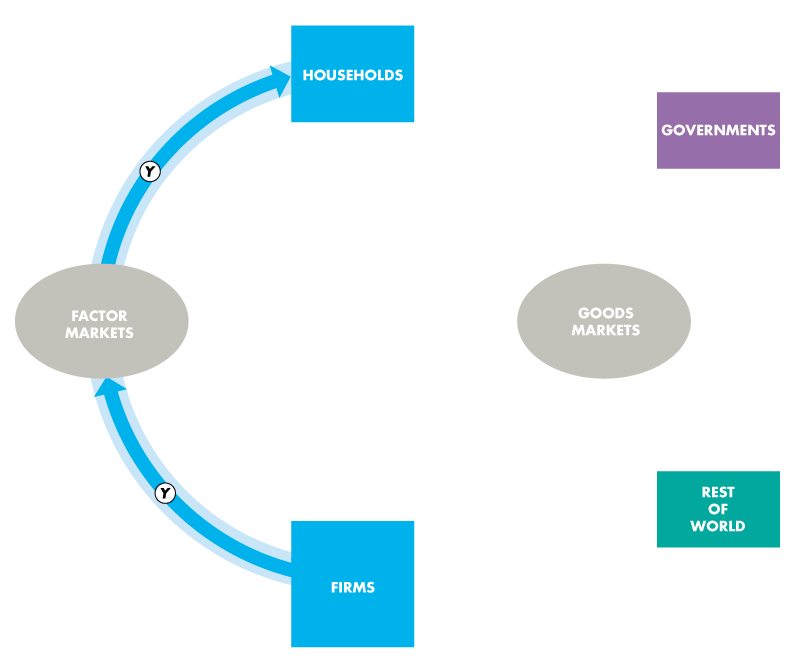
The expenditure approach: Y = C + I + G + (X − M)
Add up everything the four groups of buyers spend on final output. Households spend consumption expenditure (C). Firms spend on new plant, equipment, buildings and additions to inventory — investment (I). Governments spend on goods and services — government expenditure (G); note that transfers like benefits and subsidies are not included because they are not payments for current output. Finally, foreigners buy our exports (X) while we buy imports (M), so we add net exports (X − M).
The income approach: the same total from the other side
Instead of summing spending, sum the incomes firms pay for the factors they hire: compensation of employees (payment for labour) plus net operating surplus (interest, rent, corporate profit and proprietors' income). That gives net domestic income at factor cost. Two adjustments convert it to GDP: add indirect taxes less subsidies to move from factor cost to market prices, and add depreciation to move from net to gross. Done correctly, the income approach lands on exactly the same number as the expenditure approach.
Nominal vs real GDP — and the deflator
If prices rise, nominal GDP rises even when nothing extra is produced. Nominal GDP values output at the prices of the same year; real GDP values it at the prices of a fixed reference base year, so quantity changes alone move it. To compare years honestly, always use real GDP. The bridge between the two is the GDP deflator, a broad measure of the price level for everything in GDP.
Nominal GDP
Real GDP
Real GDP per person and the limits of GDP
Real GDP per person — real GDP divided by population — is our headline measure of the average standard of living, because it removes both inflation and the effect of a growing population. Over the long run it climbs along the path of potential GDP (output when labour, capital, land and entrepreneurship are fully employed), while actual real GDP swings around that path through the business cycle of expansions and recessions.
But GDP is a measure of marketed output, and much of what makes life good never reaches a market: household production, the underground economy, health and life expectancy, leisure, environmental quality, and political freedom. A country can raise GDP by working longer hours or polluting more, yet be no better off. GDP is indispensable and incomplete at the same time — which is why economists pair it with broader gauges such as the Human Development Index.
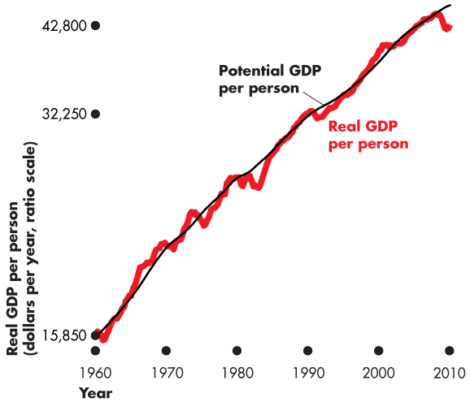
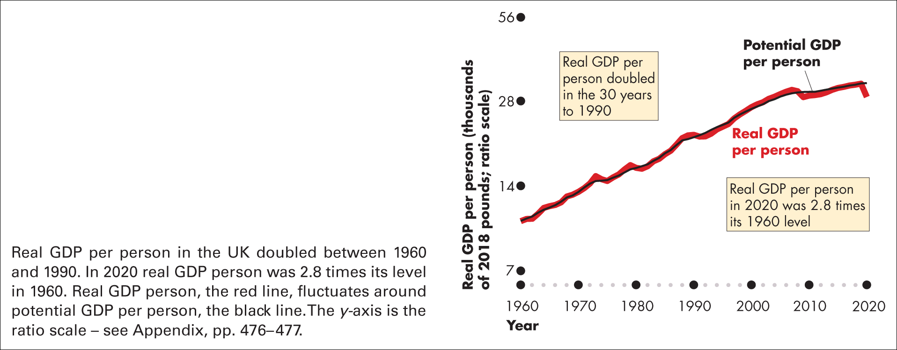
Bhutan famously replaced GDP with Gross National Happiness (GNH) as its guiding policy metric, weighting psychological well-being, ecological diversity, and cultural resilience alongside material output. While no country has fully abandoned GDP, the UN now publishes an Inclusive Wealth Index that accounts for natural capital depletion — a step toward measuring what truly matters.
GDP only counts what is produced this year; whether the economy can keep producing more next year is the story of growth, and the money that finances it flows through the loanable funds market. Once we add prices and spending together, we also need to track the overall aggregate demand for everything the economy makes.
Drag the five spending components below to build GDP yourself. Watch net exports (X − M) flip negative when imports overtake exports, and see how it drags the total down.
Monitoring Jobs & Inflation
This section shows how a monthly survey turns into the labour-market statistics, why some unemployment is permanent and even healthy, how the Consumer Price Index is constructed, and why it tends to overstate true inflation.
Counting jobs: the labour-force survey
Each month, statisticians survey a large sample to sort the population. First, set aside everyone under 16 or in institutional care to leave the working-age population. Split that into people in the labour force and people not in it. The labour force is the sum of the employed and the unemployed. To be counted as unemployed you must be without work but have actively searched in the last four weeks, be waiting to be recalled from a lay-off, or be waiting to start a new job within 30 days.
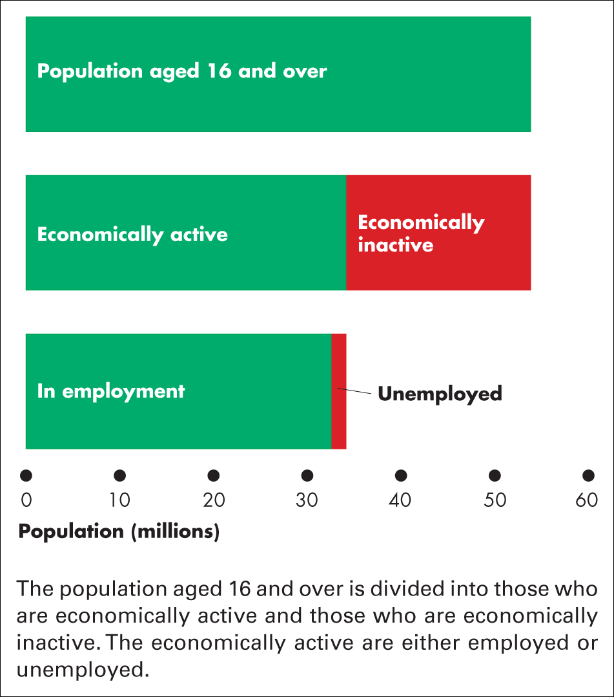
The headline rates
From those boxes come the key indicators. The unemployment rate is the share of the labour force that is unemployed. The labour force participation rate (in UK data, the economic activity rate) is the share of the working-age population that is in the labour force — it tells you how many people are even trying to work.
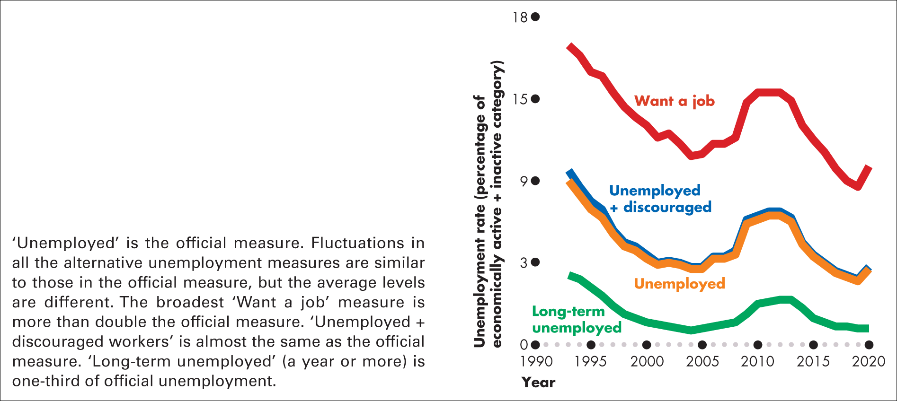
Types of unemployment and "full employment"
Not all unemployment is the same. Frictional unemployment arises from normal turnover as people move between jobs — it is permanent and healthy in a growing economy. Structural unemployment appears when technology or trade destroys whole categories of jobs and workers' skills no longer match the openings. Cyclical unemployment is the extra unemployment that rises in a recession and falls in a boom. When cyclical unemployment is zero, the economy is at full employment, and the unemployment that remains (frictional plus structural) is the natural rate of unemployment.
The price level and the Consumer Price Index
The price level is the average level of prices; a persistently rising price level is inflation, a persistently falling one is deflation. We track it with the Consumer Price Index (CPI), which measures the average price of a fixed basket of goods and services bought by a typical urban household. Building it takes three stages: select the basket (from an infrequent expenditure survey), survey prices monthly, then compute the index. The CPI equals 100 in a reference base period, so a CPI of 245 means prices are 145% higher than in the base years.
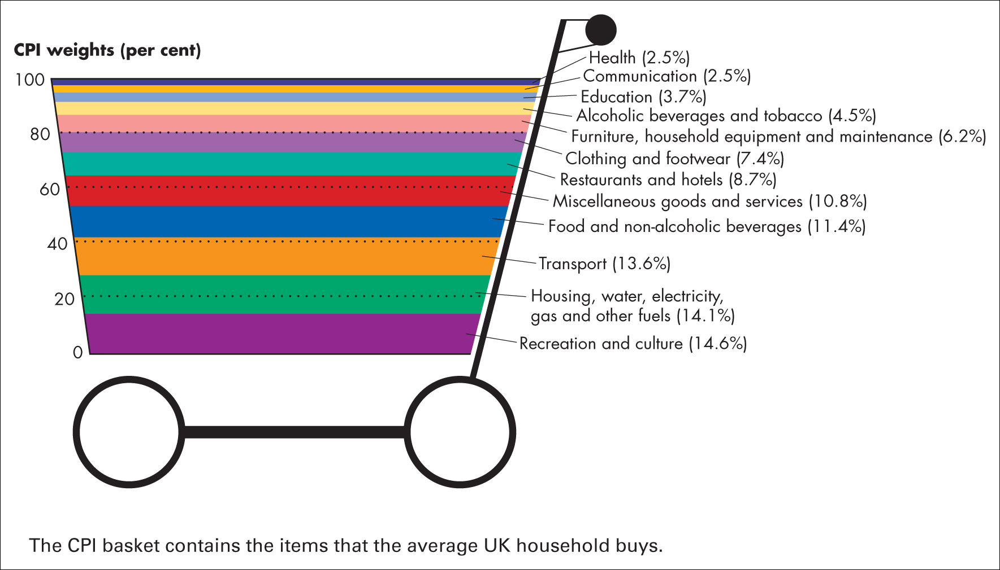
The inflation rate and why the CPI is biased
The CPI's main job is to measure inflation — the percentage change in the price level from one year to the next.
Because the basket is fixed, the CPI tends to overstate true inflation for several reasons. Commodity substitution bias: when beef gets dear, shoppers buy more chicken, but the fixed basket assumes they keep buying beef. Quality change bias: part of a price rise pays for a genuinely better product, yet the CPI counts it all as inflation. New goods bias: new, often pricier goods replace old ones the basket never captured. A 1996 estimate put the overstatement at about 1.1 percentage points a year — a big deal when a third of government outlays are CPI-linked.
Finland ran a large-scale universal basic income (UBI) experiment from 2017–2018, giving 2,000 unemployed citizens €560 per month with no strings attached. Results showed modest improvements in well-being and no significant drop in employment — suggesting that at least some unemployment is not driven by laziness but by rigid labour markets and lack of opportunity.
Nominal vs real wages
Inflation is also why we separate nominal wages (the pounds in your pay packet) from real wages (what those pounds actually buy). Divide the nominal wage by the price level and you get the real wage — the only honest measure of whether workers are better off. A 4% pay rise during 4% inflation leaves the real wage flat.
Nominal wage
Real wage
Inflation is ultimately bound up with the quantity of money, a thread picked up under money and inflation, and unpredictable inflation is exactly what monetary policy tries to tame.
Drag last year's and this year's CPI to compute the inflation rate. Push "this year" below "last year" and watch the rate go negative — that is deflation.
Economic Growth
This section separates growth from the business cycle, shows what makes potential GDP grow, introduces labour productivity and growth accounting, and surveys the great theories that try to explain why some economies surge ahead while others stall.
Growth versus the business cycle
Real GDP can rise for two very different reasons. The economy might simply be returning to full employment after a slump — a movement from inside the production possibilities frontier back onto it. That is recovery, not growth. True economic growth is the outward shift of the frontier itself, driven by the expansion of potential GDP. Only the second kind raises the economy's lasting capacity to produce.
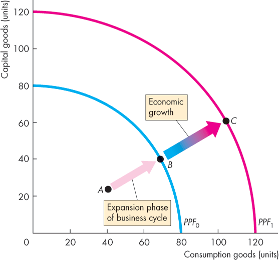
The magic of compounding — the Rule of 70
Small growth rates have huge long-run effects because they compound. The Rule of 70 says the number of years for a variable to double is roughly 70 divided by its annual percentage growth rate.
Artificial intelligence is the latest wildcard in growth theory. Some economists, like Erik Brynjolfsson, argue that AI could trigger a "J-curve" of productivity: initial investment costs depress measured growth, followed by a sharp acceleration as the technology diffuses. If so, the Solow model's steady-state may be less steady than we thought.
What makes potential GDP grow
To pin down potential GDP, economists use two building blocks: an aggregate production function (how real GDP rises as labour hours increase, holding everything else fixed) and an aggregate labour market. In that market the demand for labour and the supply of labour both depend on the real wage rate — the money wage divided by the price level. Equilibrium sets the real wage where quantity demanded equals quantity supplied, and the hours employed at that point define full employment. Feed those full-employment hours through the production function and you get potential GDP.
Potential GDP therefore grows for two reasons: growth in the supply of labour (more hours worked) and growth in labour productivity (more output per hour). The first raises total real GDP but, because of diminishing returns, can actually lower output per hour; only rising productivity raises real GDP per person on a lasting basis.
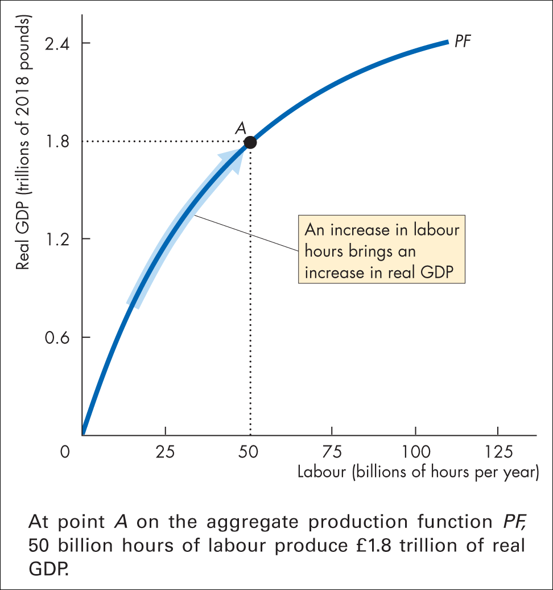
Labour productivity and growth accounting
Labour productivity is real GDP produced per hour of labour — real GDP divided by aggregate hours. When labour becomes more productive, firms will pay more per hour, so the demand for labour rises, the real wage rises, and potential GDP expands. Growth accounting divides the sources of productivity growth into three: physical capital growth (more tools and machines per worker), human capital growth (skills from education, training and learning-by-doing — the most fundamental source), and technological advances (new methods and new goods).
Saving, investment and the engine of capital
Physical capital does not appear from nowhere — it is financed by saving. Saving funds investment, investment raises capital per worker, and more capital per worker raises labour productivity. That chain is why growth policy so often starts with encouraging saving and investment, and why the mechanics of that flow belong to the loanable funds market in the next section.
Theories of growth: classical, neoclassical and new
Three broad theories compete. Classical growth theory is pessimistic: any rise in income above subsistence triggers a population boom that drags income back down — the Malthusian trap. Neoclassical growth theory says growth in real GDP per person comes from technological change, but because capital is subject to diminishing returns, growth eventually settles and poorer countries should converge toward richer ones. New growth theory breaks the ceiling: knowledge is a public capital good that is not subject to diminishing returns, so the discovery of new ideas can sustain growth indefinitely — a "perpetual motion machine" of ideas begetting ideas.
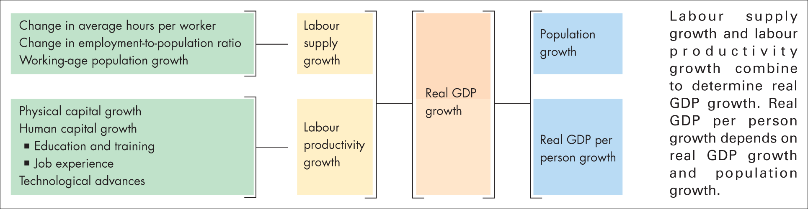
Convergence — and why it is not guaranteed
Neoclassical theory predicts convergence: with the same access to technology, poorer countries grow faster and catch up. The evidence is mixed. Some economies (the East Asian "tigers") converged dramatically; others fell further behind, partly because ideas and institutions — not just capital — determine whether a country can absorb new technology. Policies to speed growth follow directly from growth accounting: stimulate saving, fund research and development, improve education, and encourage international trade, since the fastest-growing nations tend to be those with the fastest-growing exports and imports.
Sustained growth eventually shows up as a rising path of potential GDP that, together with prices, shapes the economy's aggregate supply, and governments lean on growth-friendly fiscal policy to nudge saving, education and research.
Finance, Saving & Investment
This section separates physical capital from the funds that buy it, builds the loanable funds market from a demand curve (investment) and a supply curve (saving), and shows how shifts in either — including the government's own budget — move the real interest rate and can crowd out private investment.
Physical capital vs financial capital
Keep two ideas apart. Physical capital is the real stuff — tools, machines, buildings — produced in the past and used today to produce goods and services. Financial capital is the funds firms raise to buy that physical capital. Investment in the economic sense means adding to physical capital, not buying shares. Gross investment is total spending on new and replacement capital; net investment is gross investment minus depreciation — the genuine increase in the capital stock.
Saving, wealth, and where the funds come from
Saving is the part of income not paid in taxes or spent on consumption, and it adds to wealth (the value of everything people own). Saving is the ultimate source of the funds that finance investment, supplied through loan, bond and stock markets and intermediated by banks, pension funds and insurers. In a full economy, the funds that finance investment come from three places: household saving (S), any government budget surplus (T − G), and borrowing from the rest of the world (M − X).
The real interest rate — the right price
What matters for borrowing and lending is not the headline nominal interest rate but the real interest rate, which strips out inflation.
The real interest rate is the opportunity cost of borrowing for a firm and the reward for waiting for a saver. It is the variable on the vertical axis of the loanable funds market.
The loanable funds market: demand is investment
The market for loanable funds aggregates every individual loan, bond and stock market into one. Its demand curve is essentially business investment: a higher real interest rate makes borrowing dearer, so the quantity of funds demanded falls — the curve slopes down. The whole demand curve shifts when expected profit changes: more optimism about profit means more planned investment and greater demand for funds at every interest rate.
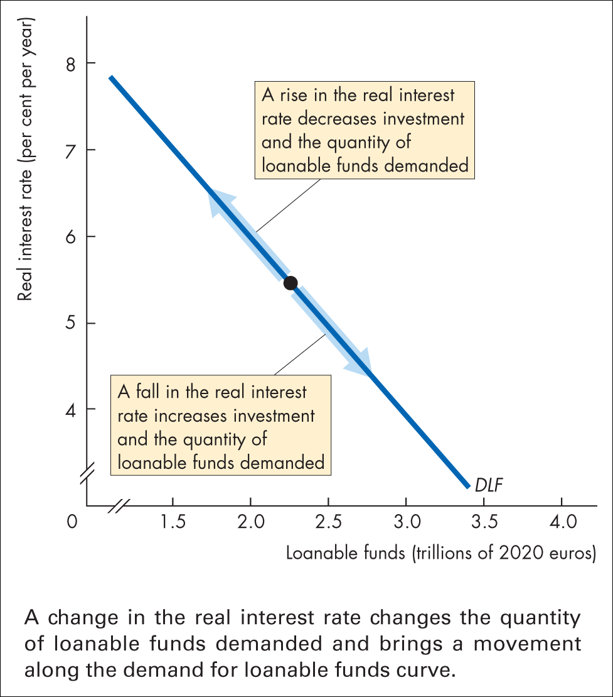
The loanable funds market: supply is saving
The supply curve is essentially saving: a higher real interest rate rewards saving more, so the quantity of funds supplied rises — the curve slopes up. The supply curve shifts with disposable income, expected future income, wealth and default risk. The market reaches equilibrium at the real interest rate where the quantity of funds demanded equals the quantity supplied — equivalently, where investment equals saving.
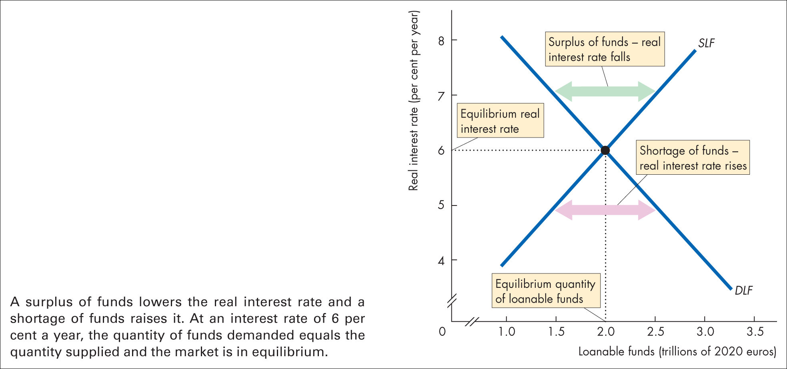
Supply = Saving
Demand = Investment
Shifts, the government budget, and crowding out
Financial markets are volatile in the short run but stable in the long run, and the volatility comes from shifts in demand or supply. A rise in expected profit shifts demand right, raising the real interest rate and pulling in more saving. A rise in saving shifts supply right, lowering the rate and encouraging more investment. The government joins the market through its budget: a budget surplus (T > G) adds to the supply of funds and lowers the real interest rate; a budget deficit (G > T) adds to the demand for funds and raises it.
That deficit effect is the danger of crowding out: by bidding up the real interest rate, government borrowing reduces the private investment that firms would otherwise have undertaken. One counter-argument is the Ricardo–Barro effect — if rational taxpayers expect future tax rises to repay the deficit, they save more now, supply shifts right too, and crowding out is offset. Whether it fully holds in practice is hotly debated.
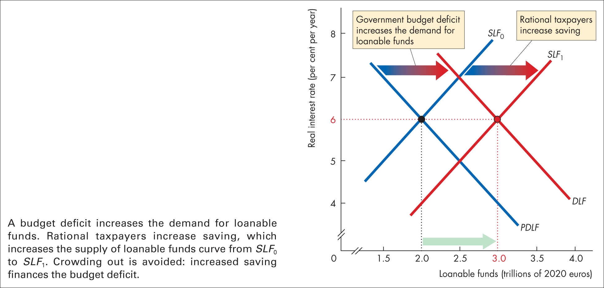
The 2008 financial crisis was fundamentally a crisis of the loanable funds market: a collapse in expected profit shifted investment demand leftward, while frightened households shifted saving rightward. The real interest rate on safe assets plunged toward zero and central banks had to invent quantitative easing to keep credit flowing.
The real interest rate set here feeds straight into investment and consumption decisions, so it is a key transmission channel for monetary policy, while budget surpluses and deficits are the headline instruments of fiscal policy.
Drag the two shift sliders to move the loanable funds market. Push demand (investment) right and the real interest rate climbs; push supply (saving) right and it falls. The vertical axis is the real interest rate; the horizontal axis is the quantity of loanable funds.
Money, the Price Level & Inflation
This chapter takes you from the most basic question — what counts as money? — through the machinery of the banking system to the long-run link between money growth and rising prices. Get the chain right and you understand both why a tap on the printing press can feel harmless for a year and ruinous over a decade.
What money is, and what it does
Money is any commodity or token that is generally acceptable as a means of payment — a method of settling a debt. Money performs three classic functions. As a medium of exchange it removes the need for barter, which requires a double coincidence of wants (you must find someone who has what you want and wants what you have) and is therefore costly. As a unit of account it provides one agreed measure for stating prices, so we can compare the value of very different goods. As a store of value it can be held now and exchanged for goods later.
Modern money is fiat money — objects that are money because the law decrees them to be. The objects we actually use are currency (notes and coins in circulation) and deposits at banks and other financial institutions. Crucially, currency inside the banks is not counted as money; only currency outside the banks plus deposits is. A cheque, a debit card, or a credit card is not money — each is merely an instruction to transfer money, or in the credit card’s case a way to obtain a short-term loan that must later be repaid with money.
Official measures: M0, M1 and M4
Because “money” shades from instantly spendable to merely savings, statisticians publish nested measures. The narrowest, sometimes called M0 or the monetary base, is the sum of currency (notes and coins) plus banks’ reserve deposits at the central bank. M1 adds the most spendable deposits — currency plus chequable deposits owned by households and firms. The UK’s broad measure, M4, adds savings and time deposits and other near-money held by the wider private sector. The further out you go, the more liquidity you sacrifice: liquidity is the property of being instantly convertible into a means of payment with little loss of value.
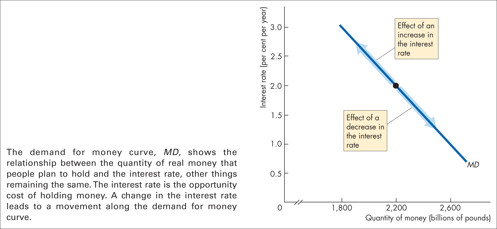
How banks create money
A depository institution takes deposits and makes loans. Its goal is to maximise its owners’ wealth by lending at a higher rate than it pays depositors — while balancing profit against prudence, since depositors must be able to withdraw on demand. A bank divides its assets into reserves (cash in the vault plus its deposit at the central bank), liquid assets, securities and loans.
The act of lending is where new money appears. When a bank makes a loan it simply credits the borrower’s deposit account — and that new deposit is new money. The borrower spends it, the recipient deposits it at another bank, which keeps a fraction as reserves and lends the rest, and so the process repeats. Money is created by the banking system, not minted by the printing press.
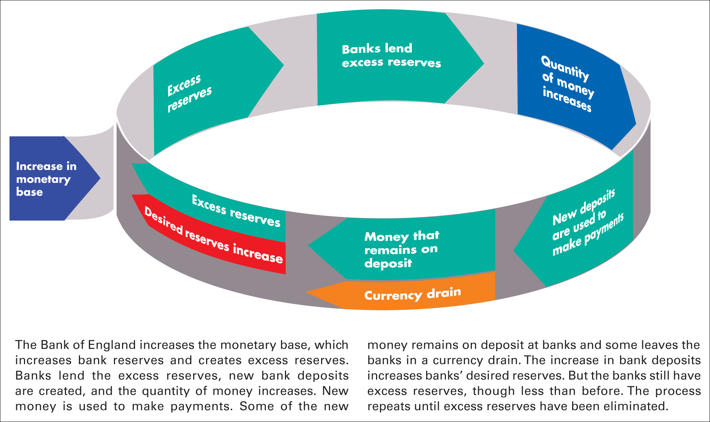
The money multiplier
How far can the process run? It is limited by two leakages. Banks hold a fraction of deposits as reserves — the desired reserve ratio — and the public holds some money as cash rather than deposits, a leakage called the currency drain (measured by the currency drain ratio). In the simplest textbook case with no currency drain, the money multiplier is the reciprocal of the reserve ratio.
Drag the two sliders below to see the multiplier at work: raise the reserve ratio and the multiplier shrinks, because each bank keeps more back and lends less onward.
The demand for money and the quantity theory
People hold money to make payments, but holding it has a cost: the interest forgone by not holding bonds. So the demand for money falls as the nominal interest rate rises and increases with real GDP and the price level. Money-market equilibrium sets the interest rate where the quantity of money demanded equals the quantity supplied.
The long-run link between money and prices is captured by the quantity theory of money, built on the equation of exchange, where V is the velocity of circulation (how many times each pound is spent per year) and P × Y is nominal GDP.
If velocity and real output are roughly stable, then a given percentage rise in M must show up as the same percentage rise in P. In growth-rate terms: the inflation rate roughly equals the money-growth rate minus the real-output-growth rate. This is the long-run logic behind aggregate demand rising faster than supply.
Bitcoin, launched in 2009, was designed to have a fixed maximum supply of 21 million coins — an explicit rejection of fiat money's unlimited printability. Its price volatility, however, has made it a poor medium of exchange and an excellent speculative asset, illustrating Friedman's dictum that money is whatever people believe is money.
Money growth and inflation in the long run
Across countries and decades the relationship is striking: nations with rapid money growth experience rapid inflation, and low-money-growth nations enjoy low inflation. Short-run wobbles aside, sustained inflation is fundamentally a monetary phenomenon — the long-run companion to the consumer price index you met earlier. This is precisely why central banks in monetary policy watch money and credit aggregates so closely.
Aggregate Supply & Aggregate Demand
Production grows and prices rise, but unevenly — some years the economy races, others it shrinks. The AS–AD model is the workhorse for explaining that unevenness. The key skill is distinguishing a movement along a curve (caused by a change in the price level) from a shift of the whole curve (caused by anything else).
Aggregate demand and why it slopes down
The quantity of real GDP demanded is the total of final goods and services that households, firms, government and foreigners plan to buy: Y = C + I + G + X − M. Aggregate demand is the relationship between that quantity and the price level. The AD curve slopes downward for two reasons. The wealth effect: a higher price level erodes the real value of money holdings, so people save more and spend less. The substitution effects: a higher price level raises the real interest rate (the intertemporal substitution effect), discouraging borrowing and spending, and makes domestic goods dearer than foreign ones (the international substitution effect), cutting net exports.
Short-run versus long-run aggregate supply
Long-run aggregate supply (LRAS, or LAS) is the relationship between real GDP supplied and the price level when real GDP equals potential GDP. Because potential GDP is set by resources and technology, not by prices, the LRAS curve is vertical at potential GDP — in the long run the price level cannot buy you more output.
Short-run aggregate supply (SRAS, or SAS) is the relationship when the money wage rate and other resource prices are held constant. With wages sticky, a rise in the price level lowers the real wage, induces firms to hire and produce more, and so the SRAS curve slopes upward. The two curves cross at potential GDP for the prevailing money wage.
Macroeconomic equilibrium
Short-run macroeconomic equilibrium occurs where AD intersects SRAS — the quantity of real GDP demanded equals the quantity supplied. If output is below this point firms raise production and prices; if above, they cut. Long-run macroeconomic equilibrium occurs where AD meets LRAS, with real GDP equal to potential GDP. In the short run the economy can sit above or below potential, giving an inflationary or recessionary gap, until the money wage adjusts and pulls SRAS back to the long-run point.
What shifts AD and AS — movements versus shifts
A change in the price level moves the economy along a fixed curve. A change in anything else shifts the curve. AD shifts with expectations (about future income, inflation and profits), with fiscal policy and monetary policy, and with the world economy (the exchange rate and foreign income). AS shifts with changes in potential GDP (more labour, more capital, better technology shift both LRAS and SRAS rightward) and with changes in the money wage rate or other resource prices (which shift only SRAS).
Demand-pull versus cost-push inflation
The model neatly separates two engines of rising prices. Demand-pull inflation begins with a rightward shift of AD: firms produce more, the price level rises, and real GDP temporarily exceeds potential. Cost-push inflation begins with a leftward shift of SRAS — for example a jump in the oil price — which raises the price level while cutting output, the unhappy combination known as stagflation.
Demand-pull
Cost-push
The 1970s oil shocks shifted SRAS leftward so violently that both inflation and unemployment rose together, breaking the simple Phillips curve trade-off and forcing economists to develop the expectations-augmented Phillips curve. It was a humbling moment: a model that had guided policy for two decades suddenly failed in the real world.
The Business Cycle, Inflation & Deflation
This chapter puts motion into the AS–AD diagram. It explains the phases of the business cycle, the gaps between actual and potential output, the short-run trade-off between inflation and unemployment captured by the Phillips curve, and why falling prices can be even more dangerous than rising ones.
Phases of the business cycle
The business cycle is the periodic but irregular fluctuation of real GDP around its trend. An expansion is a period of rising real GDP; a recession is a significant, broad decline (conventionally at least two successive quarters of falling real GDP). The cycle arises mainly because aggregate demand swings faster than the money wage rate can adjust, so the economy is pushed away from potential and only gradually returns.
Output gaps
The output gap measures how far real GDP sits from potential GDP. When real GDP exceeds potential, the economy is above full employment and an inflationary gap opens, putting upward pressure on prices. When real GDP falls short of potential, the economy is below full employment and a recessionary gap opens, with downward pressure on prices. At full employment the gap is zero.
The Phillips curve: short-run trade-off, long-run vertical
The short-run Phillips curve (SRPC) shows a negative relationship between the inflation rate and the unemployment rate, holding the natural unemployment rate and expected inflation constant: lower unemployment comes with higher inflation, and vice versa. It is simply another way of viewing the upward-sloping SRAS curve, since both arise from the money wage being fixed in the short run.
The long-run Phillips curve (LRPC) is a vertical line at the natural unemployment rate: in the long run there is no trade-off, because any inflation rate is possible but unemployment always returns to its natural level. The natural rate hypothesis says that when inflation changes, unemployment moves only temporarily before returning to the natural rate. A rise in expected inflation shifts the whole SRPC upward.
Demand-pull and cost-push cycles
Inflation comes in two flavours, just as in the AS–AD model. Demand-pull inflation starts with rising aggregate demand; any factor can start it, but only sustained growth in the quantity of money can keep it going, producing a wage–price spiral. Cost-push inflation starts with rising costs (a leftward SRAS shift) and, if money growth accommodates it, becomes a cost-push spiral.
Deflation, its dangers, and stagflation
Deflation — a sustained fall in the price level — sounds benign but is corrosive. Falling prices raise the real burden of debt, encourage households and firms to delay purchases (why buy today what will be cheaper tomorrow?), and can trap an economy in a downward spiral that monetary policy struggles to escape because nominal interest rates cannot fall far below zero. Japan’s long deflation, with aggregate demand growing more slowly than potential GDP, is the classic cautionary tale.
At the opposite, equally uncomfortable extreme is stagflation — the simultaneous appearance of stagnant output (recession) and rising prices (inflation), produced by a leftward shift of aggregate supply. It defeats the simple Phillips-curve trade-off, because both unemployment and inflation worsen together.
The yield curve — the gap between long-term and short-term government bond yields — has predicted every US recession since 1955 with only one false positive (1966). When short-term rates exceed long-term rates (an "inversion"), markets are signalling that they expect the central bank to cut rates in the future to fight a slowdown. It is the single most reliable leading indicator in macroeconomics.
Fiscal Policy
A government budget is more than bookkeeping. By choosing how much to tax and spend, the state shifts aggregate demand, builds or erodes national debt, and changes the incentives that determine potential GDP. This chapter weighs both the demand-side punch of fiscal policy and its supply-side and crowding-out costs.
The budget, deficits and debt
The government’s budget balance equals tax revenues minus outlays. A balanced budget has revenues equal to outlays; a budget surplus has revenues above outlays; a budget deficit has outlays above revenues. A deficit must be financed by borrowing, and the accumulated stock of past deficits is the national debt: this year’s debt equals last year’s debt plus this year’s deficit. On the revenue side income taxes dominate; on the outlay side transfer payments (pensions, benefits), expenditure on goods and services, and debt interest are the big items.
Automatic stabilisers versus discretionary policy
Fiscal policy acts through two channels. Automatic fiscal policy is triggered by the state of the economy without any new act of legislation: induced taxes (which fall when incomes fall) and needs-tested spending (which rises when unemployment rises) act as automatic stabilisers, cushioning both booms and recessions with no debate or delay. Discretionary fiscal policy is a deliberate change initiated by lawmakers — a new spending programme or a tax-rate change.
It helps to split the actual budget balance into a structural component (what the balance would be at full employment) and a cyclical component (the part caused by the economy being above or below full employment). The structural balance is the better gauge of the government’s underlying fiscal stance.
During the COVID-19 pandemic, the UK government spent roughly £280 billion on emergency support — the largest discretionary fiscal expansion in peacetime history. The result was a budget deficit of 15% of GDP in 2020, the highest since the Second World War, and a national debt exceeding 100% of GDP for the first time since the 1960s.
The expenditure and tax multipliers
An initial change in spending sets off further rounds of spending as the extra income is partly re-spent — the multiplier effect. The government expenditure multiplier measures the effect on aggregate demand of a change in government purchases. Its size depends on the marginal propensity to consume (MPC), the fraction of each extra pound of income that is spent.
The tax multiplier measures the effect of a change in taxes: a tax cut raises disposable income, which raises consumption and aggregate demand. It is smaller in magnitude than the government expenditure multiplier, because a £1 tax cut raises spending by less than £1 (part is saved), whereas £1 of government purchases adds the full pound directly. The balanced budget multiplier is therefore positive, not zero.
Drag the sliders to see the multiplier in action: raise the marginal propensity to consume and each round of re-spending grows, multiplying a given burst of government spending into a much larger change in aggregate demand.
Supply-side effects and crowding out
Fiscal policy also works on the supply side, more slowly but more durably. The expenditure side can provide public goods that raise productivity and potential GDP. The revenue side cuts the other way: taxes drive a tax wedge between the wage firms pay and the wage workers receive, reducing the full-employment quantity of labour and lowering potential GDP — the insight behind the Laffer curve.
A further cost is crowding out: when a deficit is financed by government borrowing, the government competes with firms for loanable funds, raising the interest rate and squeezing out private investment. Persistently large deficits can widen the Lucas wedge — the ever-growing gap between potential GDP and what it might have been — slowing long-run growth.
Limits and lags
Discretionary fiscal policy is hampered by four practical problems: the law-making time lag (legislation is slow to pass), a shrinking area of genuine discretion (much of the budget is committed to entitlements), the difficulty of estimating potential GDP, and the inexactness of economic forecasting. Because policy must target where the economy will be, badly timed stimulus can push real GDP away from potential rather than towards it.
"Helicopter money" — Milton Friedman's thought experiment of dropping cash from helicopters to stimulate spending — was nearly implemented in 2020 when the US Treasury sent direct stimulus cheques to households. The idea bypasses banks and multipliers entirely, putting purchasing power straight into consumers' hands.
Monetary Policy
A modern central bank pursues a small set of goals with a small set of tools. This chapter sets out those objectives, the all-important official rate, the transmission mechanism that links it to the wider economy, the practice of inflation targeting, the emergency tool of quantitative easing, and the long-running debate between rules and discretion.
Objectives and tools
The central bank’s objectives are ultimately political and set out in its mandate. In the United States the Federal Reserve pursues a dual mandate — stable prices and maximum employment. “Stable prices” means a low inflation rate (often judged by core inflation, which strips out volatile food and fuel); “maximum employment” means keeping real GDP close to potential and the output gap small. After the financial crisis, financial stability became a prerequisite for achieving these goals.
The official (bank) rate
The central bank’s main instrument is the official rate — the bank rate set by the Bank of England’s Monetary Policy Committee, or the federal funds rate target in the US. The bank rate anchors all overnight and short-term interest rates: it acts as the floor of an interest-rate corridor, with the lending facilities rate (bank rate plus a margin) as the ceiling, so the market repo rate stays inside the corridor. The central bank hits its target by adjusting the supply of reserves through open market operations — buying securities to inject reserves and lower the rate, or selling them to drain reserves and raise it.
The transmission mechanism
A change in the official rate does not affect inflation directly — it works through a chain. (1) Changing reserves alters the quantity of deposits and loans the banking system can create — the money multiplier at work. (2) The supply of bank loans changes the supply of loanable funds and the long-term real interest rate. (3) The real interest rate changes consumption, investment and net exports, which (4) shift aggregate demand. Real GDP responds after about a year and the inflation rate after about two — the monetary policy transmission mechanism.
Inflation targeting
Inflation targeting is a strategy in which the central bank publicly commits to an explicit inflation target — typically a CPI range of 1–3% aiming at 2% a year — and explains how its actions will achieve it. If inflation strays outside the range, the bank is expected to steer it back over roughly two years. Inflation targeting reliably delivers transparency and accountability; whether it controls inflation better than implicit targeting is more debated.
Quantitative easing
When the bank rate is already near zero and cannot fall further, the central bank can turn to quantitative easing (QE): large-scale purchases of government and other securities, paid for with newly created reserves, to expand the monetary base, lower long-term interest rates and support spending directly. QE was the headline unconventional tool of the post-2008 era and again during the covid-19 shock.
The Bank of Japan pioneered negative interest rates in 2016, charging commercial banks to hold excess reserves. The experiment was designed to force lending, but banks largely absorbed the cost rather than passing it to depositors, revealing a limit to how far monetary policy can push when the zero lower bound is hit.
Rules versus discretion, and the limits of policy
Should policy follow a fixed rule or rely on case-by-case discretion? A well-understood rule keeps inflation expectations anchored and makes inflation easier to forecast. Candidate rules include an inflation-targeting rule, a money-targeting rule (Friedman’s k-percent rule, growing money at the rate of potential GDP) and a nominal-GDP-targeting rule.
Yet monetary policy has real limits. The link from the official rate to spending is loose, the response of expenditure to interest rates is hard to predict, and the lags are long and variable — real GDP moves after about a year, inflation after about two. These “loose links and long and variable lags” make monetary policy, for all its reach, a genuinely difficult instrument to wield with precision.